더 빨리, 더 안정적으로, 과적합 없이
— 학습 관련 기술
이 자료는 학습 관련 기술 교안 한 권을 끝까지 담았습니다
"P2·P3에서 기울기를 구해 W ← W − η∂L∂W로 갱신하는 법을 배웠습니다. 그런데 이 갱신을 그대로 쓰면 무엇이 문제이고, 학습을 잘 되게 하려면 무엇을 더 해야 할까?"
SGD의 지그재그, Momentum, AdaGrad, RMSProp, Adam, 옵티마이저 계보
0으로 두면 안 되는 이유, 활성화 분포, Xavier · He 초기값
내부 공변량 변화, 미니배치 평균·분산으로 정규화, γ · β
딥러닝의 과적합, 가중치 감소(L2), 드롭아웃
검증 데이터, 튜닝 과정, Optuna
전체 정리, 용어, 교안 확인 필요, 예상 문제, 단어장
교안 1쪽은 목차(Contents)입니다. 다섯 항목이 위의 Part 1–5와 같습니다(4번 항목 이름이 교안 전체 제목과 같은 "Training Techniques"인데, 내용은 과적합 대책입니다). 마지막 두 쪽(Thank You, References)은 내용이 없어 뺐습니다. 참고문헌은 사이토 고키 『밑바닥부터 시작하는 딥러닝 1』(리마스터판, 2025, 한빛미디어)입니다.
왜 배우고, 어디에 힘을 줄까
P2·P3까지 배운 것은 "기울기를 구해 반대 방향으로 조금 움직인다"였습니다. 이 교안은 그 학습을 더 빠르고 안정적으로, 그리고 시험 데이터에서도 잘 맞도록 만드는 기술 다섯 묶음입니다.
| 구분 (추측) | 교안 쪽 | 섹션 | 무엇을 할 수 있으면 되나 |
|---|---|---|---|
| 비교 | 3–13 | 01–10 | 네 옵티마이저가 무엇을 기억하고(v, h, m) 무엇을 바꾸는지(방향·학습률). Momentum은 기울기를 누적, AdaGrad는 학습률이 줄어들기만 함, RMSProp은 옛 기울기를 잊음, Adam = Momentum + RMSProp |
| 그림 읽기 | 16–21 | 12–16 | 표준편차 1 → 0과 1에 몰림(기울기 소실), 0.01 → 0.5에 몰림(표현력 제한). Xavier는 시그모이드·tanh, He는 ReLU |
| 식의 뜻 | 23–26 | 17–20 | 배치 정규화는 미니배치의 평균·분산으로 정규화, 그 뒤 γ · β로 다시 조정. 효과 네 가지 |
| 정의 | 29–34 | 21–23 | 과적합의 뜻과 원인, 가중치 감소는 큰 가중치에 벌점, 드롭아웃은 훈련 때만 뉴런을 무작위로 끔 |
| 절차 | 36–38 | 24–26 | 훈련 · 검증 · 시험 데이터의 역할, 시험 데이터로 하이퍼파라미터를 고르면 안 됨 |
기말 정보(사용자 확인): 범위는 퍼셉트론 교안부터, 계산 문제는 대체로 없을 예정입니다. 단, P3에서 교수님이 역전파 계산은 할 줄 알아야 한다고 하셨습니다(11.12, P3 교안의 계산 그래프). 이 교안에 대한 교수님 말씀은 아직 없어 위 구분은 모두 추측입니다. Momentum · AdaGrad · Adam의 한 단계 계산은 "(보충) 이해용 계산"으로만 넣었습니다.
미리 짚고 갈 개념 ① — P1·P2·P3에서 가져올 것
| 가져올 개념 | 기억할 내용 | 이 교안에서 쓰는 곳 |
|---|---|---|
| 경사 하강법 (P2 15) | W ← W − η∂L∂W. 기울기의 반대 방향으로 한 걸음 | SGD 그 자체 (→ 01) |
| 학습률 η (P2 16) | 너무 크면 지나치거나 발산, 너무 작으면 매우 느림. 사람이 정하는 하이퍼파라미터 | SGD의 한계, AdaGrad의 학습률 조정 (→ 02, 05) |
| SGD · 미니배치 (P2 07·08) | P2 7쪽의 SGD = 샘플 1개마다 갱신. 실제로는 미니배치 b개의 평균 기울기로 갱신 | 01, 배치 정규화(→ 18–19) |
| 기울기 화살표 (P2 14) | −기울기 = 함수가 가장 크게 줄어드는 방향 | 4쪽 화살표 그림 (→ 02) |
| 시그모이드 · ReLU (P1 16) | 시그모이드 출력 0~1, x = 0에서 0.5 · ReLU = max(0, x) | 활성화 분포, 초기값 (→ 12–16) |
| 역전파 (P3 08·11) | ReLU: x ≤ 0이면 0을 보냄 · 시그모이드: 들어온 값 × y(1 − y) | 기울기 소실 (→ 12, 미리 짚을 개념 ③) |
| 과적합 · 규제 (중간 범위) | 훈련 데이터에만 지나치게 맞음. 회귀의 규제, 트리의 가지치기·앙상블 | Part 4 (→ 21–23) |
미리 짚고 갈 개념 ② — 평균 · 분산 · 표준편차 · 정규분포
- 평균mean μ: 값을 모두 더해 개수로 나눈 것
- 분산variance σ2: (각 값 − 평균)2의 평균. 값이 평균에서 얼마나 퍼져 있는지
- 표준편차standard deviation σ: 분산의 제곱근 √σ2. 원래 값과 단위가 같음
2, 4, 4, 4, 5, 5, 7, 9 → 평균 5, 분산 4, 표준편차 2. 모든 값에 0.01을 곱하면 표준편차도 0.01배(0.02), 분산은 0.0001배가 됩니다.
Part 3의 배치 정규화는 이 평균과 분산으로 값을 "평균 0, 분산 1"로 바꿉니다(→ 19).
정규분포normal (Gaussian) distribution: 평균을 중심으로 좌우 대칭인 종 모양 분포. N(μ, σ2)의 두 번째 값은 표준편차가 아니라 분산입니다.
| 범위 | 들어가는 비율 (보충) |
|---|---|
| 평균 ± 1σ | 약 68% |
| 평균 ± 2σ | 약 95% |
예: Xavier 초기값 N(0, 1n)은 분산이 1n, 표준편차는 1√n입니다(→ 14). n = 100이면 표준편차 0.1.
가중치 초기값을 "표준편차 0.01인 정규분포에서 뽑는다" = 대부분(약 95%)이 −0.02 ~ 0.02 사이인 작은 무작위 값으로 시작한다는 뜻입니다. P2 21의 weight_init_std=0.01이 이것입니다(→ 11–13).
미리 짚고 갈 개념 ③ — 기울기 소실이란
기울기 소실vanishing gradient: 역전파가 출력층에서 입력층 쪽으로 갈수록 기울기가 점점 작아져 거의 0이 되는 현상. 앞쪽 층의 가중치는 기울기가 0에 가까우니 거의 갱신되지 않습니다.
P3 11에서 시그모이드 계층은 들어온 값에 y(1 − y)를 곱해 보냈습니다. 이 값은 최대 0.25(y = 0.5일 때)이고, y가 0이나 1에 가까우면 0에 가깝습니다.
| 시그모이드 입력 x | 출력 y | y(1 − y) |
|---|---|---|
| 0 | 0.5 | 0.25 |
| 2 | 0.881 | 0.105 |
| 5 | 0.993 | 0.0066 |
| −5 | 0.007 | 0.0066 |
가장 좋은 경우(0.25)라도 시그모이드 층 5개를 거꾸로 지나면 0.255 ≈ 0.00098배. 출력이 0·1 근처라면(0.0066) 훨씬 더 작아집니다. 그래서 활성화 값이 0과 1에 몰리면 기울기 소실이 생깁니다(→ 12).
미리 짚고 갈 개념 ④ — Part 1에서 쓰는 기호
| 기호 | 뜻 (보충) |
|---|---|
| ⊙ | 원소별 곱element-wise product: 같은 자리끼리만 곱함. 행렬 곱이 아님 (−0.7, 4) ⊙ (−0.7, 4) = (0.49, 16) |
| √h, 1√h | h의 원소마다 제곱근, 역수 √(0.49, 16) = (0.7, 4), 1√h = (1.43, 0.25) |
| βt | β를 t번 곱한 것(t = 갱신 횟수). 0.91 = 0.9, 0.910 ≈ 0.349, 0.99910 ≈ 0.990 |
| 10−7 | 0.0000001 (1을 107로 나눈 값) |
f(x, y) = 120x2 + y2
기울기(편미분, P2 13): ∂f∂x = x10, ∂f∂y = 2y. 최솟값은 (0, 0)에서 0.
그림은 모두 (−7, 2)에서 출발합니다. 그곳의 기울기 = (−0.7, 4): y 방향 성분이 x 방향의 약 6배입니다. 이 함수에서 W는 점 (x, y), ∂L∂W는 (x10, 2y)로 읽으면 됩니다. Python 검산.
최적화 방법
확률적 경사 하강법 Stochastic Gradient Descent
| The goal of training a neural network is to find the optimal parameters that minimize the loss (cost), and this process is called optimization. | 신경망 학습의 목표는 손실(비용)을 최소로 만드는 최적의 매개변수를 찾는 것이고, 이 과정을 최적화optimization라고 합니다. |
| The optimization method stochastic gradient descent (SGD), updates parameters using their gradients (derivatives). | 최적화 방법인 확률적 경사 하강법(SGD)은 매개변수를 그 기울기(미분)를 이용해 갱신합니다. |
이처럼 매개변수를 갱신하는 방법(규칙)을 옵티마이저optimizer라고 부릅니다 (보충 용어, 11–12쪽 그림의 optim이 이것). Part 1은 SGD와, 그 단점을 고친 옵티마이저 넷을 비교합니다.
W ← W − η∂L∂W
| 기호 | 뜻 (교안) |
|---|---|
| W | 갱신할 가중치 매개변수 weight parameter to be updated |
| η | 학습률 learning rate |
| ∂L∂W | W에 대한 손실의 기울기 (P2 17, P3에서 역전파로 구함) |
| ← | 오른쪽을 계산해 왼쪽에 넣음(대입) |
P2에서 본 SGD와 같은 것인가
식은 P2 15·18의 경사 하강법과 똑같습니다. SGD는 지금 위치의 기울기만 보고, 그 반대 방향으로 η × 기울기만큼 움직입니다. 과거에 어떻게 움직였는지는 기억하지 않습니다.
P2 7쪽은 SGD를 "샘플 1개마다 1번 갱신"으로 정의했습니다(P2 07). 이 교안 3쪽은 SGD를 갱신 규칙(W ← W − η∂L∂W)의 이름으로 씁니다. 교안 참고서 『밑바닥부터 시작하는 딥러닝 1』도 무작위로 고른 미니배치의 기울기로 이 식을 쓰는 것을 SGD라고 부릅니다(P2 08). 갱신 규칙은 어느 쪽이든 같습니다.
- 방향(기울기)을 바꿈: 지난 기울기를 누적 → Momentum (→ 03)
- 학습률을 바꿈: 매개변수마다 학습률을 따로 조정 → AdaGrad, RMSProp (→ 05, 07)
- 둘 다: Adam (→ 08)
이 구분은 11쪽 계보도의 "modified Gradient" / "modified Learning Rate" 두 갈래와 같습니다(→ 09).
- 최적화는 손실을 최대로 만드는 매개변수를 찾는 과정이다 → X (최소)
- SGD는 과거 기울기를 누적해 갱신한다 → X (현재 기울기만; 누적은 Momentum)
SGD의 한계 Limitations of Gradient Descent
| In anisotropic functions where the gradient behaves differently depending on the direction, simply following the direction of the steepest descent can result in a highly zigzagging path, making it inefficient and requiring substantial computational resources to reach the optimum. | 방향에 따라 기울기가 다르게 행동하는 비등방성anisotropic 함수에서는, 가장 가파르게 내려가는 방향만 따라가면 심하게 지그재그로 움직이는 경로가 되어 비효율적이고, 최적값에 닿는 데 계산이 많이 듭니다. |
| → To address the limitations of SGD, other optimization methods are used: Momentum, AdaGrad, Adam, and etc.. | → SGD의 한계를 해결하려고 Momentum, AdaGrad, Adam 등 다른 최적화 방법을 씁니다. |
왼쪽 그림 읽기: f = 120x2 + y2의 −기울기를 격자점마다 회색 화살표로 그렸습니다(P2 14와 같은 방식). 위쪽(y > 0) 화살표는 아래로, 아래쪽 화살표는 위로 — 거의 수직이고 x축(y = 0)을 향합니다. 최솟값 (0, 0)을 똑바로 가리키지 않습니다.
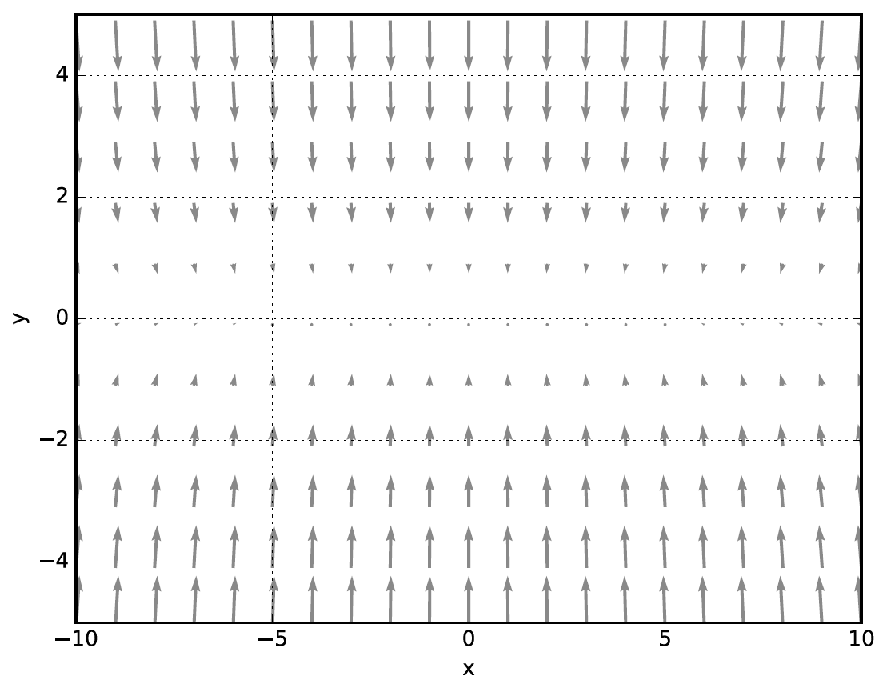
다시 그린 그림 · 누르면 원본SGD의 경로 — (−7, 2)에서 30번 갱신
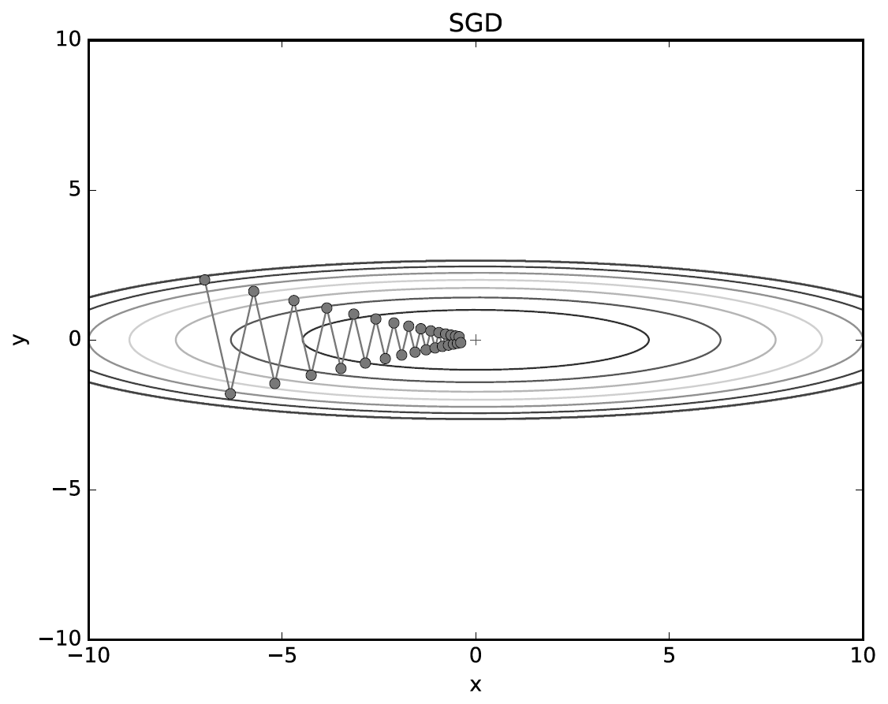
다시 그린 그림 · 누르면 원본그림 읽기: 회색 타원 = f의 등고선(같은 높이를 이은 선). 가로로 매우 길쭉합니다(x 방향 지름이 y 방향의 √20 ≈ 4.5배). 가운데 + = 최솟값 (0, 0). 회색 점 = 갱신 한 번마다의 위치, 선으로 차례대로 이었습니다.
경로는 (−7, 2) → (−6.3, −1.8) → (−5.7, 1.6) → …처럼 매번 y의 부호가 바뀌며 위아래로 튀고, x 방향으로는 조금씩만 나아갑니다. 진폭이 줄면서 (−0.35, 0.08) 근처에서 점이 촘촘히 겹쳐 끝납니다 — 30번 갱신해도 원점에 닿지 못했습니다.
교안에 학습률이 적혀 있지 않습니다. η = 0.95(책 『밑바닥부터 시작하는 딥러닝 1』의 비교 실험 설정)로 Python 재현하면 그림과 점 위치가 맞습니다 (보충).
왜 지그재그가 되나 — 숫자로 (보충) Python 검산
SGD 한 번: x ← x − ηx10, y ← y − η · 2y. 즉
x ← (1 − 0.1η) x, y ← (1 − 2η) y
기울기 (x10, 2y)에서 x와 y에 붙는 계수 0.1과 2가 20배 차이가 납니다. 이것이 "방향에 따라 기울기가 다르다"(비등방성)의 뜻입니다. 시작점에서 −기울기는 최솟값 방향과 약 64° 어긋나 있습니다.
| η | x 배율 | y 배율 | 30회 뒤 |
|---|---|---|---|
| 0.1 | 0.99 | 0.8 | (−5.18, 0.00) — y는 0, x는 거의 그대로 |
| 0.95 | 0.905 | −0.9 | (−0.35, 0.08) — 지그재그 (그림) |
| 1.05 | 0.895 | −1.1 | (−0.25, 34.9) — y가 발산 |
가파른 y 방향 때문에 η를 1보다 크게 할 수 없습니다(y 배율의 크기가 1을 넘으면 발산, P2 16과 같은 이유). 그런데 그 η로는 완만한 x 방향의 걸음이 너무 작습니다. η = 0.95에서는 y 배율이 −0.9라 매번 부호가 바뀌어 지그재그, η = 0.1에서는 지그재그는 없지만 x가 30번에 −7 → −5.18밖에 못 갑니다.
→ 방향마다 걸음 크기를 따로 정하거나(AdaGrad), 같은 방향으로 계속되는 움직임을 쌓아 가속하면(Momentum) 해결됩니다.
- 비등방성 함수에서 −기울기는 항상 최솟값을 정확히 가리킨다 → X
- SGD의 지그재그는 기울기가 방향과 관계없이 같아서 생긴다 → X (방향에 따라 달라서)
모멘텀 Momentum (교안 제목 표기 "Momemtum"은 오타)
| Momentum in physics: A moving object tends to keep moving in the same direction unless an external force acts on it. | 물리에서의 운동량: 움직이는 물체는 바깥 힘이 작용하지 않는 한 같은 방향으로 계속 움직이려 합니다. |
| Momentum in gradient descent: Instead of relying only on the current gradient, momentum accumulates the past gradients. | 경사 하강법에서의 Momentum: 현재 기울기에만 의존하지 않고, 과거의 기울기를 누적합니다. |
| αv: gradually reduces the accumulated update when no external force is applied. | αv: 바깥 힘(기울기)이 없을 때 누적된 갱신량을 서서히 줄입니다. |
W ← W + v
| 기호 | 뜻 (보충) |
|---|---|
| v | 속도velocity: 지금까지 쌓인 갱신량. W와 모양이 같고 0에서 시작 |
| α | 남길 비율(0~1). 보통 0.9 — 교안 본문엔 값이 없고 11쪽 계보도에 momentum=0.9 |
| − η∂L∂W | 이번 기울기에 따른 SGD 한 걸음 |
v가 하는 일 — 같은 방향이면 쌓이고, 기울기가 없으면 줄어듦
v ← αv − η∂L∂W: 이전 속도의 α배(0.9배)를 남기고, 이번 SGD 걸음을 더합니다. 그 v만큼 W를 옮깁니다.
| 갱신 횟수 | 같은 기울기가 계속될 때 걸음 크기 (SGD 한 걸음의 몇 배) |
|---|---|
| 1 | 1 |
| 2 | 1.9 (= 0.9 × 1 + 1) |
| 3 | 2.71 |
| 10 | 6.51 |
| 계속 | 10에 가까워짐 (= 11 − 0.9) |
기울기가 0이 되면 v ← 0.9v만 남아 1 → 0.9 → 0.81 → 0.729…로 서서히 줄어듭니다(교안의 "αv: gradually reduces…"). α = 0.9, Python 검산.
| 회 | 기울기 | v | W = (x, y) |
|---|---|---|---|
| 0 | — | (0, 0) | (−7, 2) |
| 1 | (−0.7, 4) | (0.07, −0.4) | (−6.93, 1.6) |
| 2 | (−0.693, 3.2) | (0.132, −0.68) | (−6.80, 0.92) |
2회째 v의 x 성분 = 0.9 × 0.07 + 0.1 × 0.693 = 0.132: 같은 방향(+)이 쌓여 커졌습니다. y 성분도 −0.68로 커졌지만, y가 0을 지나 기울기 부호가 바뀌면 쌓인 값이 상쇄됩니다(→ 04).
Momentum의 경로 — 일정한 방향으로 계속 나아감
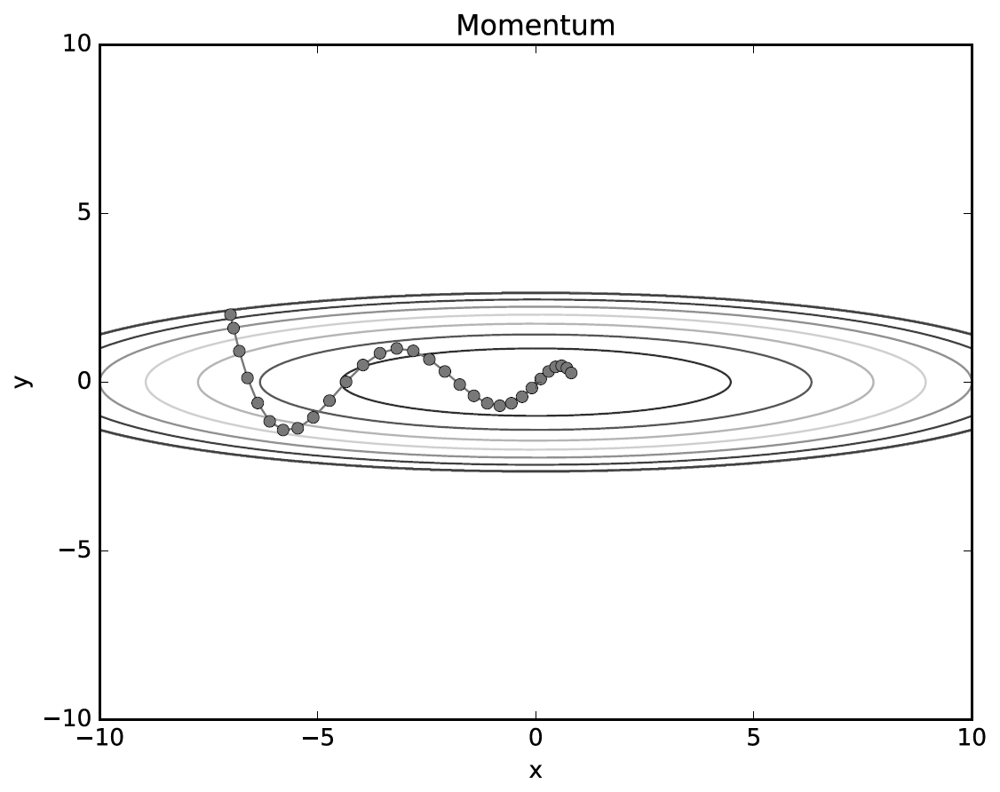
다시 그린 그림 · 누르면 원본Momentum is an accumulated gradient that keeps updating and moving in a consistent direction.
Momentum은 누적된 기울기로, 갱신을 계속하며 일정한 방향으로 움직입니다.
그림 읽기: 등고선·축·시작점 (−7, 2)는 4쪽과 같습니다. 경로는 거의 수직으로 내려가 (−5.8, −1.4) 근처에서 바닥을 찍고, 오른쪽 위로 휘어 (−3.2, 1.0) 근처, 다시 내려가 (−0.8, −0.7) 근처, 다시 올라가 원점을 조금 지나친 (0.9, 0.1) 근처에서 끝납니다 — 완만한 S자입니다.
점 간격은 처음엔 좁다가 가운데(x ≈ −4 ~ −1)에서 넓어지고(속도 증가) 끝에서 다시 좁아집니다.
왜 SGD보다 지그재그가 줄어드나
| 방향 | 기울기의 부호 | v에서 일어나는 일 |
|---|---|---|
| x | 계속 같음 (x < 0 동안 늘 −) | 더해져 쌓임 → 점점 빨라짐 |
| y | 위·아래로 바뀜 | +와 −가 상쇄 → 진동이 줄어듦 |
y가 −가 되는 구간이 몇 번뿐(y 부호 바뀜 4번; SGD는 30번 모두). 가장 낮은 점 (−5.79, −1.42), 30회 뒤 (0.90, 0.09). 교안에는 η · α 값이 없어서, 이 값으로 그림과 점 위치가 맞는 것을 확인했습니다.
원점을 지나친 것도 Momentum의 특징입니다. 쌓인 속도 v가 남아 있어 기울기가 작아진 곳에서도 바로 멈추지 못합니다 (보충).
- Momentum은 현재 기울기만 사용한다 → X (과거 기울기를 누적)
- Momentum은 매개변수마다 학습률을 조정한다 → X (그건 AdaGrad; Momentum은 기울기 쪽을 바꿈)
- αv 항은 갱신량을 점점 키운다 → X (외부 힘이 없으면 서서히 줄임)
- Momentum은 W ← W − v로 갱신한다 → X (W + v; v 안에 이미 − 부호가 있음)
AdaGrad Adaptive Gradient
| AdaGrad extends simple learning rate decay by adjusting the learning rate adaptively based on the accumulated past gradients during training. | AdaGrad는 단순한 학습률 감소를 확장해, 학습 중 누적된 과거 기울기를 바탕으로 학습률을 적응적으로(매개변수마다) 조정합니다. |
| h : accumulates the squared gradients (element-wise). | h: 기울기의 제곱을 (원소별로) 누적합니다. |
| Parameters with large accumulated gradients ⇒ smaller learning rate. | 누적 기울기가 큰 매개변수 ⇒ 학습률이 작아짐 |
| Parameters with small accumulated gradients ⇒ relatively larger learning rate. | 누적 기울기가 작은 매개변수 ⇒ 학습률이 상대적으로 큼 |
W ← W − η 1√h ∂L∂W
- 윗줄: h에 이번 기울기의 제곱을 더하기만 합니다(0에서 시작, W와 모양이 같음). 제곱이라 항상 0 이상 → h는 줄지 않습니다.
- 아랫줄: SGD와 같은데 학습률 η 자리가 η × 1√h로 바뀌었습니다. 원소마다 다른 학습률입니다.
학습률 감소와 AdaGrad — 한 단계 계산
학습이 진행될수록 학습률을 줄이는 방법. 처음엔 크게 움직이고, 최솟값 가까이에선 작게 움직여 지나치지 않게 합니다. 단순한 방법은 모든 매개변수의 학습률을 똑같이 줄입니다. AdaGrad는 이것을 매개변수마다 따로 하는 방법입니다.
그래서 많이 움직인(기울기가 컸던) 방향은 걸음이 작아지고, 거의 안 움직인 방향은 걸음이 상대적으로 큽니다. 02의 f에서는 y 방향 기울기가 커서 y 방향 학습률이 빨리 작아집니다.
| 회 | 기울기 g | h | W = (x, y) |
|---|---|---|---|
| 0 | — | (0, 0) | (−7, 2) |
| 1 | (−0.7, 4) | (0.49, 16) | (−5.5, 0.5) |
| 2 | (−0.55, 1) | (0.79, 17) | (−4.57, 0.14) |
1회째: g√h = (−0.70.7, 44) = (−1, 1)이라 두 방향 모두 1.5씩 움직입니다. 이후 y 쪽 h(17)가 x 쪽(0.79)보다 훨씬 커서 y 방향 걸음이 빠르게 작아집니다. Python 검산.
반대로 바꾸면 틀리는 문장: 누적 기울기가 큰 매개변수일수록 학습률이 커진다 → X (작아짐) · AdaGrad의 h는 기울기의 합을 누적한다 → X (기울기의 제곱)
AdaGrad의 경로와 실용 팁
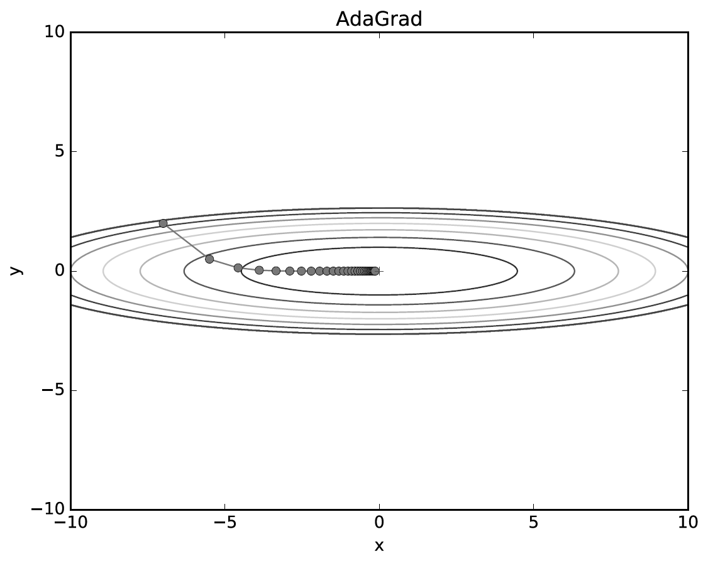
다시 그린 그림 · 누르면 원본Practical tip: To prevent the learning rate from becoming zero, a very small value such as 10−7 is added to h.
실용 팁: 학습률이 0이 되는 것을 막기 위해 h에 10−7 같은 아주 작은 값을 더합니다. (이 문장의 표현은 확인 필요 — 다음 장)
그림 읽기: 첫 걸음에 (−7, 2) → (−5.5, 0.5)로 오른쪽 아래로 크게 이동, 둘째 (−4.6, 0.1), 그 뒤로는 y ≈ 0인 x축 위를 거의 일직선으로 오른쪽으로 갑니다. 점 간격이 점점 좁아져 원점 바로 왼쪽 (−0.1, 0) 근처에서 겹쳐 끝납니다.
SGD의 지그재그가 사라졌습니다. y 방향은 h가 빨리 커져 걸음이 작아지고, x 방향은 상대적으로 큰 학습률이 유지되기 때문입니다.
10−7은 무엇을 막나 · AdaGrad의 약점
h가 0이면 1√h는 0으로 나누기가 되어 계산이 깨집니다(예: 처음 기울기가 0인 원소). 작은 값을 더하면 분모가 0이 되지 않습니다. 더하는 자리에 따라 값이 다릅니다.
- 교안 방식(h에 더함): 1√(0 + 10−7) ≈ 3162
- 책 방식(√h에 더함): √h + 10−7 = 0 + 10−7이므로 1√h + 10−7 = 107
교안 문장은 "학습률이 0이 되는 것을 막는다"이지만, 10−7을 더해도 h가 커져 학습률이 0에 가까워지는 것은 막지 못합니다. 참고서 코드는 위의 책 방식(√h에 1e-7)입니다. → 확인 필요(→ 29).
30회 뒤 (−0.12, 0.00), f ≈ 0.0007. y 부호가 한 번도 바뀌지 않았습니다(지그재그 없음).
h는 더하기만 하므로 학습이 길어지면 1√h가 계속 작아져 갱신량이 0에 가까워집니다. 같은 크기 1의 기울기가 계속되면 걸음은 1 → 0.71 → 0.58 → … → 100번째 0.1 (η = 1, 1√t) (보충).
반대로 바꾸면 틀리는 문장: AdaGrad의 학습률은 학습 중 커졌다 작아졌다 한다 → X (h가 줄지 않으므로 작아지기만 함)
RMSProp Root Mean Square Propagation
| Since AdaGrad accumulates squared gradients over time, as training progresses, the update magnitude becomes smaller. | AdaGrad는 기울기 제곱을 계속 누적하므로, 학습이 진행될수록 갱신량이 작아집니다. |
| To address this limitation of AdaGrad, RMSProp gradually forgets old gradients and gives more weight to recent ones. | 이 한계를 해결하려고 RMSProp은 오래된 기울기는 서서히 잊고 최근 기울기에 더 큰 비중을 줍니다. |
| → This technique is called Exponential Moving Average (EMA), where the influence of past gradients decreases exponentially over time. | → 이 기법을 지수이동평균exponential moving average, EMA이라고 합니다. 과거 기울기의 영향이 시간이 지남에 따라 지수적으로 줄어듭니다. |
W ← W − η 1√h ∂L∂W
- 윗줄만 AdaGrad와 다릅니다: 옛 h를 α배로 줄이고, 새 제곱은 (1 − α)배만 넣습니다.
- 아랫줄(갱신)은 AdaGrad와 똑같습니다.
- 여기의 α는 감쇠율(보통 0.9~0.99)로, Momentum의 α와 다른 값입니다 (보충, 교안엔 값 없음). 이 쪽에는 경로 그림이 없습니다.
지수이동평균 — 숫자로 보기 (보충) Python 검산 · α = 0.9
h를 풀어 쓰면 과거 기울기 제곱들의 가중 합입니다. k번 전 기울기 제곱에 붙는 가중치 = (1 − α)αk.
| 몇 번 전 | 0 (이번) | 1 | 2 | 3 | 4 |
|---|---|---|---|---|---|
| 가중치 | 0.1 | 0.09 | 0.081 | 0.073 | 0.066 |
매번 0.9배씩 줄어듭니다 = 지수적으로 잊음. 최근 10번의 가중치 합이 0.65, 그보다 오래된 것은 모두 합쳐 0.35입니다.
반대로 바꾸면 틀리는 문장: RMSProp은 오래된 기울기에 더 큰 비중을 준다 → X (최근) · RMSProp은 AdaGrad와 갱신식(W ←)이 다르다 → X (h를 구하는 식이 다름)
| 회 | AdaGrad h | 걸음 1√h | RMSProp h | 걸음 |
|---|---|---|---|---|
| 1 | 1 | 1 | 0.1 | 3.16 |
| 2 | 2 | 0.71 | 0.19 | 2.29 |
| 10 | 10 | 0.32 | 0.65 | 1.24 |
| 100 | 100 | 0.1 | 1.00 | 1.0 |
크기 1인 기울기가 계속될 때(η = 1). AdaGrad의 걸음은 계속 줄지만, RMSProp의 h는 최근 기울기 제곱(1) 근처에 머물러 걸음이 0으로 사라지지 않습니다.
처음 몇 번은 h가 0에서 시작해 작으므로 RMSProp의 걸음이 오히려 큽니다(3.16). Adam은 이것을 편향 보정으로 고칩니다(→ 08).
Adam Adaptive Moment Estimation
Adam is a method derived from the attempt to combine Momentum and RMSProp. Typical settings: β1 = 0.9, β2 = 0.999
Adam은 Momentum과 RMSProp을 합치려는 시도에서 나온 방법입니다. 보통 β1 = 0.9, β2 = 0.999로 둡니다.
v ← β2v + (1 − β2)(∂L∂W ⊙ ∂L∂W) ② RMSProp 쪽
m̂ = m1 − β1t v̂ = v1 − β2t ③ 편향 보정
W = W − η 1√v̂ m̂ ④ 갱신 교안 그대로: 마지막 줄만 ← 대신 = (뜻은 대입), 분모의 작은 값 ε은 없음 (→ 29)
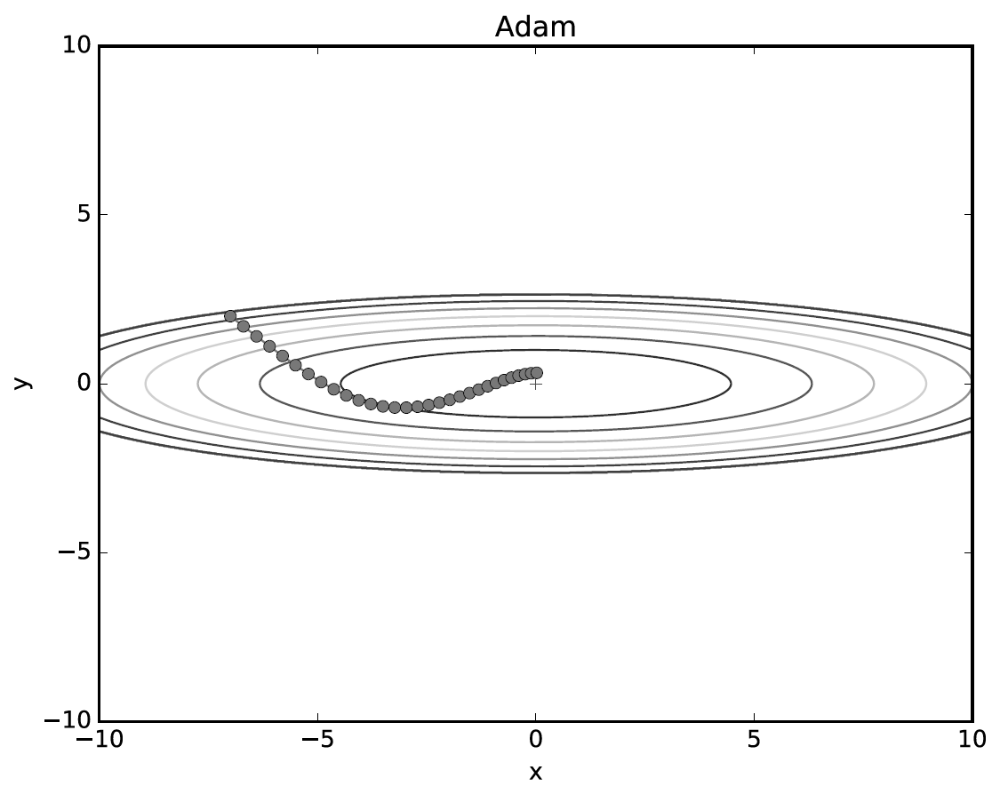
다시 그린 그림 · 누르면 원본m, v, m̂, v̂ — 각각 무엇인가
| 기호 | 뜻 (보충 — 교안에는 기호 설명이 없음) |
|---|---|
| m | 기울기의 지수이동평균. 최근 기울기 방향을 기억 → Momentum의 v 역할 |
| v | 기울기 제곱의 지수이동평균 → RMSProp의 h 역할. Momentum의 v(속도)와 이름만 같고 다른 것 |
| t | 지금까지의 갱신 횟수(1, 2, 3, …) |
| m̂, v̂ | m, v를 편향 보정bias correction한 값 |
| β1, β2 | 옛 값을 남기는 비율. β1은 m의 감쇠율(Momentum의 α와 같은 역할), β2는 v의 감쇠율(RMSProp의 α와 같은 역할) |
④는 RMSProp의 갱신식에서 기울기 자리에 m̂(평균 방향), h 자리에 v̂를 넣은 꼴입니다.
m, v는 0에서 시작하므로 처음 몇 번은 실제보다 0 쪽으로 치우쳐 작습니다. 크기 1인 기울기가 계속될 때:
| t | m | 1 − 0.9t | m̂ | v | v̂ |
|---|---|---|---|---|---|
| 1 | 0.1 | 0.1 | 1 | 0.001 | 1 |
| 2 | 0.19 | 0.19 | 1 | 0.002 | 1 |
| 10 | 0.651 | 0.651 | 1 | 0.00996 | 1 |
1 − βt로 나누면 치우침이 정확히 지워집니다. 보정 없이 m ÷ √v를 쓰면 t = 1에서 3.16, t = 10에서 6.53으로 걸음이 들쭉날쭉합니다. t가 커지면 βt → 0이라 보정 효과는 사라집니다.
Adam의 경로와 한 단계 계산
그림 읽기(앞 장의 오른쪽 그림): (−7, 2)에서 오른쪽 아래로 비스듬히 내려가 x ≈ −3 근처(약 (−2.97, −0.71))에서 y ≈ −0.7로 살짝 아래로 지나친 뒤, 완만하게 위로 휘어 (0.1, 0.3) 근처에서 끝납니다. 점이 거의 같은 간격으로 촘촘히 찍혀 있습니다.
Momentum처럼 휘어지는 곡선이지만 좌우 흔들림이 훨씬 작고 부드럽습니다. m(방향 기억)과 v(방향마다 걸음 크기 조정)가 함께 작동한 결과입니다.
- Adam은 Momentum과 AdaGrad를 합친 것이다 → X (교안: Momentum과 RMSProp)
- Adam의 v는 Momentum의 속도 v와 같다 → X (기울기 제곱의 평균)
- 편향 보정은 학습 후반에 크게 작용한다 → X (초반)
| 값 | x 성분 | y 성분 |
|---|---|---|
| 기울기 g | −0.7 | 4 |
| m = 0.1g | −0.07 | 0.4 |
| v = 0.001g2 | 0.00049 | 0.016 |
| m̂ = m ÷ 0.1 | −0.7 | 4 |
| v̂ = v ÷ 0.001 | 0.49 | 16 |
| m̂ ÷ √v̂ | −1 | 1 |
| 새 W | −6.7 | 1.7 |
첫 걸음은 방향마다 정확히 η = 0.3. 재현 결과 가장 낮은 y ≈ −0.71, 30회 뒤 (0.14, 0.32) — 그림과 일치(교안에 η 없음, 책 설정). Python 검산.
옵티마이저 계보 Optimizers
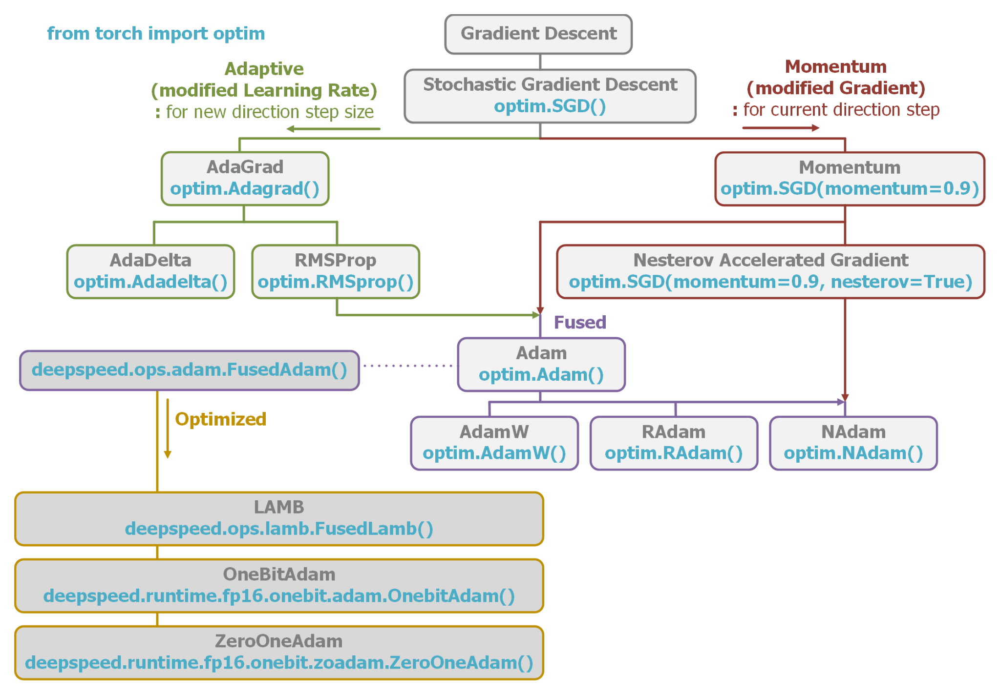
다시 그린 그림 · 누르면 원본교안 11쪽(출처 블로그 tkayyoo.tistory.com/194). 상자 위 회색 = 알고리즘 이름, 아래 하늘색 = PyTorch 코드(from torch import optim). 갈래별 읽기는 다음 장.
계보도 읽기 — 학습률을 바꾸는 갈래와 기울기를 바꾸는 갈래
| 선 색 | 갈래 |
|---|---|
| 위 | Gradient Descent → SGD optim.SGD() |
| 초록 | Adaptive(modified Learning Rate): 학습률을 바꿈 → AdaGrad → AdaDelta, RMSProp |
| 빨강 | Momentum(modified Gradient): 기울기를 바꿈 → Momentum SGD(momentum=0.9) → Nesterov |
| 보라 | RMSProp + Momentum이 Fused(합쳐짐) → Adam → AdamW, RAdam, NAdam |
| 금색 | DeepSpeed의 대규모 학습용 구현(FusedAdam → LAMB 등) |
PyTorch에서 Momentum은 따로 클래스가 없고 SGD에 momentum 값을 주는 방식입니다. 그림에서 Adam으로 들어가는 화살표가 RMSProp(초록)과 Momentum(빨강)에서 오는 것이 08의 "Momentum + RMSProp"과 같습니다.
PyTorch의 옵티마이저 PyTorch Optimizers
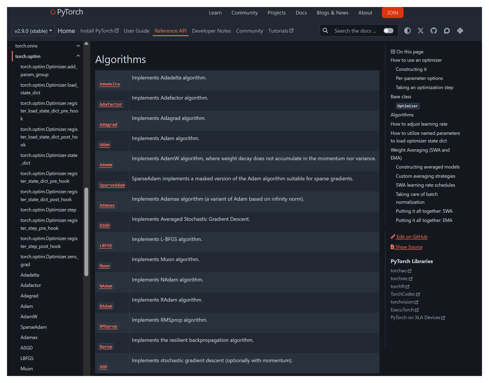
원본 화면: PyTorch 공식 문서 torch.optim 페이지(docs.pytorch.org/docs/stable/optim.html, v2.9.0)의 Algorithms 표. 교안 12쪽 그대로.
표에는 왼쪽에 클래스 이름, 오른쪽에 한 줄 설명이 있습니다. 이 교안에서 배운 것과 대응시키면:
| 클래스 | 설명(원문 요지) | 섹션 |
|---|---|---|
| SGD | 확률적 경사 하강법 (optionally with momentum) | 01, 03 |
| Adagrad | Adagrad 알고리즘 | 05 |
| RMSprop | RMSprop 알고리즘 | 07 |
| Adam | Adam 알고리즘 | 08 |
그 밖에 Adadelta, Adafactor, AdamW, SparseAdam, Adamax, ASGD, LBFGS, Muon, NAdam, RAdam, Rprop이 있습니다. 교안은 이름과 존재만 보여 줍니다 — 배운 네 방법이 실제 라이브러리에 그대로 있다는 것이 요점입니다 (추측).
어느 갱신 방법을 써야 할까 Which update method should we use?
→ There is no single technique that performs best for all problems, so the appropriate method must be chosen depending on the situation.
→ 모든 문제에서 가장 좋은 단 하나의 방법은 없으므로, 상황에 따라 알맞은 방법을 골라야 합니다.
| 방법 | 설정 (책) | 30회 뒤 | f | 경로 |
|---|---|---|---|---|
| SGD | η 0.95 | (−0.35, 0.08) | 0.013 | 지그재그 |
| Momentum | η 0.1, α 0.9 | (0.90, 0.09) | 0.048 | S자, 지나침 |
| AdaGrad | η 1.5 | (−0.12, 0.00) | 0.0007 | 거의 직선 |
| Adam | η 0.3 | (0.14, 0.32) | 0.102 | 부드러운 곡선 |
(보충) Python 재현값. 시작 (−7, 2), f의 처음 값 6.45.
이 함수에서는 AdaGrad가 가장 가까이 갔고, 30회 뒤 f만 보면 Adam이 SGD보다 큽니다. 하지만 η가 방법마다 다르고 함수도 하나뿐이라 공정한 순위가 아닙니다. 다른 함수·다른 하이퍼파라미터에서는 순서가 바뀝니다 — 그래서 13쪽의 결론이 "상황에 따라"입니다.
실제로는 Adam을 기본으로 시작하고, SGD(+ Momentum)도 여전히 널리 쓰입니다 (보충, 일반적 관행). 옵티마이저의 종류와 그 설정값도 하이퍼파라미터입니다(교안 36쪽 "optimizer options", → 24).
반대로 바꾸면 틀리는 문장: Adam은 모든 문제에서 가장 좋은 옵티마이저다 → X (교안 13쪽: 그런 방법은 없음)
Part 1 정리 — 최적화 방법
- 최적화 = 손실을 최소로 만드는 매개변수를 찾는 과정. SGD: W ← W − η∂L∂W, 현재 기울기만 사용.
- SGD의 한계: 비등방성 함수(f = 120x2 + y2)에서 −기울기가 최솟값을 가리키지 않아 지그재그, 비효율적.
- Momentum: v ← αv − η∂L∂W, W ← W + v. 과거 기울기를 누적(속도). 같은 방향은 가속, 바뀌는 방향은 상쇄 → S자 경로.
- AdaGrad: h ← h + g ⊙ g, W ← W − η1√hg. 매개변수마다 학습률 조정, 누적이 크면 학습률 작게. h는 줄지 않아 학습률이 줄어들기만 함. 실용 팁 10−7.
- RMSProp: h ← αh + (1 − α)g ⊙ g. 지수이동평균으로 옛 기울기를 잊어 갱신량이 0으로 사라지지 않음.
- Adam = Momentum + RMSProp. m(기울기 평균), v(기울기 제곱 평균), 편향 보정 m̂ = m1 − β1t, v̂. 보통 β1 = 0.9, β2 = 0.999.
- 모든 문제에 가장 좋은 방법은 없음 → 상황에 따라 선택. PyTorch torch.optim에 모두 있음.
Part 1 정리 ② — 네 방법 비교표
| 방법 | 무엇을 기억하나 | 학습률을 어떻게 바꾸나 | 경로 모양 (교안 그림) |
|---|---|---|---|
| SGD | 없음 (현재 기울기만) | 바꾸지 않음 (η 고정, 모든 매개변수 같음) | 위아래 지그재그, x 방향은 느림 (4쪽) |
| Momentum | v = 과거 기울기의 누적(속도), α배씩 남김 | 바꾸지 않음 — 대신 이동 방향·크기를 바꿈 | 완만한 S자, 원점을 조금 지나침 (6쪽) |
| AdaGrad | h = 기울기 제곱의 합 (계속 커짐) | 매개변수마다 η ÷ √h — 줄어들기만 함 | 첫 걸음 뒤 x축 따라 거의 직선 (8쪽) |
| RMSProp | h = 기울기 제곱의 지수이동평균 | 매개변수마다 η ÷ √h — 최근 기울기에 맞춰 다시 커질 수도 있음 | 교안에 그림 없음 |
| Adam | m(기울기 평균) + v(제곱 평균), 편향 보정 | 매개변수마다 η ÷ √v̂, 방향은 m̂ | 흔들림이 작은 부드러운 곡선 (10쪽) |
헷갈리기 쉬운 짝: Momentum의 v(속도) ≠ Adam의 v(기울기 제곱 평균) · Momentum의 α(속도를 남기는 비율) ≠ RMSProp의 α(감쇠율) · AdaGrad의 h는 합, RMSProp의 h는 지수이동평균 · 계보도: 초록 = 학습률 수정(Adaptive), 빨강 = 기울기 수정(Momentum).
가중치 초기값
가중치 초기값이 왜 중요한가 Importance of Weight Initialization
질문: 가중치를 모두 0(또는 모두 같은 값)으로 두면 어떻게 될까요? What happens if all weights are initialized to zero (or the same value)?
| 교안 문장 | 뜻 | |
|---|---|---|
| ① | All neurons in the layer receive the same input and produce identical outputs. | 한 층의 뉴런이 모두 같은 입력을 받고 똑같은 출력을 냅니다. |
| ② | During backpropagation, gradients become identical for all weights. | 역전파에서 기울기도 모든 가중치에 똑같이 나옵니다. |
| ③ | As a result, all weights are updated in exactly the same way. | 그래서 모든 가중치가 똑같이 갱신됩니다. |
W1 = W2 = ⋯ = Wn ⇒ 뉴런마다 다른 특징을 배우지 못함
no learning of unique features (교안 15쪽 식). 여기서 Wj는 j번째 뉴런으로 들어가는 가중치 묶음으로 읽습니다 (보충).
뉴런마다 다른 것을 배우게 하려면 가중치를 무작위(random)로 초기화해야 합니다.
이렇게 같은 값 때문에 뉴런들이 구별되지 않는 상태를 대칭성symmetry이라고 하고, 무작위 초기화는 이 대칭을 깨는 일입니다 (보충, 용어는 책 기준).
P2 21의 TwoLayerNet도 np.random.randn으로 가중치를 무작위로 만들었습니다(→ P2 21). 다만 편향 b는 0으로 시작했습니다 — 가중치가 이미 서로 다르면 편향이 0이어도 대칭이 깨집니다 (보충).
같은 값에서 출발하면 끝까지 같다 (보충) 이해용 계산
입력 2개(x = (1, 2)) → 은닉 뉴런 3개(시그모이드) → 출력 1개(시그모이드), 정답 t = 1, 손실 = 12(y − t)2. 모든 가중치를 0.5로 두고 학습률 0.5로 3번 갱신했습니다(Python 검산).
| 갱신 | 은닉 출력 (뉴런 1, 2, 3) | 손실 |
|---|---|---|
| 처음 | 0.8176, 0.8176, 0.8176 | 0.0257 |
| 1회 후 | 0.8187, 0.8187, 0.8187 | 0.0241 |
| 2회 후 | 0.8197, 0.8197, 0.8197 | 0.0227 |
| 3회 후 | 0.8208, 0.8208, 0.8208 | 0.0214 |
손실은 줄어듭니다. 그러나 세 뉴런의 출력은 계속 똑같습니다.
| 뉴런 1 | 뉴런 2 | 뉴런 3 | |
|---|---|---|---|
| x1쪽 가중치의 기울기 | −0.0030 | −0.0030 | −0.0030 |
| x2쪽 가중치의 기울기 | −0.0059 | −0.0059 | −0.0059 |
| 1회 갱신 후 (x1쪽, x2쪽) | 0.5015, 0.5030 | 0.5015, 0.5030 | 0.5015, 0.5030 |
기울기가 뉴런마다 같으니 갱신 후에도 같고, 다음 순전파도 같습니다. 뉴런 3개가 사실상 뉴런 1개처럼 움직입니다.
모두 0이면 더 심합니다: 같은 신경망에서 모든 가중치를 0으로 두면 첫 갱신에서 입력층 쪽 가중치의 기울기가 모두 0입니다(출력층 가중치가 0이라 역전파 신호가 곱해져 사라짐). 이후에도 뉴런끼리는 계속 같은 값입니다(Python 검산).
은닉층의 활성화 분포 (1) Activation Distribution in Hidden Layers (1)
| 교안 문장 | 뜻 |
|---|---|
| Observing the activation distribution gives insight into how well a neural network is learning. | 활성화값의 분포를 보면 신경망이 잘 학습하고 있는지 짐작할 수 있습니다. |
| Sigmoid activation outputs are bounded between 0 and 1. | 시그모이드 출력은 0과 1 사이입니다(→ P1 16). |
| If most activations are pushed toward 0 or 1 (saturated regions), the derivative becomes zero → This leads to vanishing gradients during backpropagation. | 대부분이 0이나 1 쪽(포화 영역)으로 밀리면 미분이 0에 가까워지고 → 역전파에서 기울기 소실vanishing gradient이 일어납니다. |
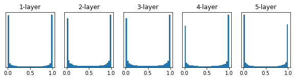
다시 그린 그림 · 누르면 원본그림 읽기: 패널 하나가 한 층(1-layer ~ 5-layer)입니다. 가로축은 활성화값(0.0 ~ 1.0), 막대 높이는 그 값이 나온 개수(세로축 눈금 없음). 다섯 층 모두 양 끝(0과 1)에 높은 막대가 있고 가운데는 바닥에 붙은 U자 모양입니다.
왜 0과 1에 몰리고, 왜 기울기가 사라지나
실험 설정 (교안에 없음 — 책 설정으로 추정, Python으로 재현해 그림과 같은 모양 확인): 입력 1000개 × 100차원(표준정규분포), 은닉층 5개 · 각 100개 뉴런, 시그모이드, 가중치는 표준편차 1인 정규분포.
이유: 뉴런 하나의 입력 합 a = x1w1 + ⋯ + x100w100는 100개 항의 합이라 크게 퍼집니다. 1층에서 a의 표준편차는 약 10(시뮬레이션 9.97)입니다. a가 ±5만 넘어도 시그모이드 값은 0이나 1에 거의 붙습니다.
| 입력 a | 0 | 2 | 5 | 10 |
|---|---|---|---|---|
| 시그모이드 미분 y(1 − y) | 0.25 | 0.105 | 0.0066 | 0.00005 |
y(1 − y)는 a = 0에서 최대 0.25(→ P3 11). 역전파는 층마다 이 값을 곱하므로(→ P3 11), 0에 가까운 값이 여러 층 곱해지면 앞쪽 층까지 기울기가 거의 전해지지 않습니다.
| 층 | 1 | 2 | 3 | 4 | 5 |
|---|---|---|---|---|---|
| 0.05 미만 또는 0.95 초과 비율 | 76.7% | 66.4% | 63.8% | 65.9% | 68.7% |
| 활성화값 표준편차 | 0.459 | 0.439 | 0.433 | 0.439 | 0.443 |
| 국소 미분 y(1 − y)의 평균 | 0.040 | 0.057 | 0.061 | 0.058 | 0.054 |
층마다 활성화값의 약 3분의 2가 포화 영역입니다(시드를 바꾸면 약 60 ~ 77%). 국소 미분의 평균은 최대값 0.25의 4분의 1에도 못 미칩니다.
- 표준편차 1이면 활성화가 0.5 부근에 몰린다 → X (0과 1에 몰림)
- 포화 영역에서는 시그모이드의 미분이 커진다 → X (0에 가까워짐)
은닉층의 활성화 분포 (2) Activation Distribution in Hidden Layers (2)
| 교안 문장 | 뜻 |
|---|---|
| What if the activations are clustered around 0.5? Neurons produce nearly identical outputs. | 활성화가 0.5 부근에 몰리면? 뉴런들이 거의 같은 값을 출력합니다. |
| → Even when gradients do not vanish, collapsed activations reduce representation capacity. | → 기울기가 사라지지 않더라도, 한곳에 몰린 활성화는 표현력을 제한합니다. |
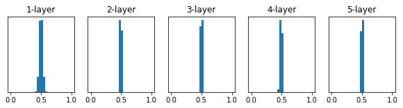
다시 그린 그림 · 누르면 원본그림 읽기: 축은 12의 그림과 같습니다. 이번에는 다섯 층 모두 0.5 바로 옆의 가는 기둥 한두 개뿐입니다. 1층만 조금 넓고(대략 0.4 ~ 0.6), 2층부터는 더 좁습니다. 실험 설정은 12와 같고 가중치 표준편차만 0.01로 추정됩니다(교안에 없음, Python 재현으로 같은 모양 확인).
왜 0.5에 몰리고, 무엇이 문제인가
이유: 가중치가 아주 작아서 입력 합 a도 0 근처에 머뭅니다. 1층에서 a의 표준편차는 약 0.1(시뮬레이션 0.100). 시그모이드는 a = 0에서 0.5이므로 출력이 모두 0.5 근처(1층 범위 0.392 ~ 0.607)입니다.
| 층 | 1 | 2 | 3 | 4 | 5 |
|---|---|---|---|---|---|
| 활성화값 평균 | 0.500 | 0.500 | 0.501 | 0.499 | 0.500 |
| 활성화값 표준편차 | 0.025 | 0.012 | 0.011 | 0.013 | 0.012 |
| y(1 − y)의 평균 | 0.249 | 0.250 | 0.250 | 0.250 | 0.250 |
(보충) Python 시뮬레이션, 시드 0. 국소 미분은 거의 최대값 0.25 — 그래서 교안은 "기울기가 사라지지 않더라도"라고 씁니다.
100개 뉴런이 거의 같은 값(≈ 0.5)을 내면, 뉴런을 100개 둔 의미가 없습니다. 11의 "모두 같은 값"과 비슷한 상태가 출력 쪽에서 생긴 것입니다 (보충 해석).
P2 21의 weight_init_std=0.01이 바로 이 설정입니다(→ P2 21). 그 신경망은 층이 1개(은닉 50개)라 학습이 되었지만, 층을 깊게 쌓으면 이 그림처럼 활성화가 0.5에 몰릴 수 있습니다 (추측).
반대로 바꾸면 틀리는 문장: 표준편차 0.01이면 기울기 소실이 주된 문제다 → X (교안: 기울기는 사라지지 않지만 표현력 제한). 12와 13을 서로 바꿔 내는 문제에 주의(0·1 ↔ 0.5).
Xavier 초기값 Weight Initialization: Xavier Initialization
Xavier Glorot와 Yoshua Bengio가 제안한 방법입니다. 활성화값이 층을 지나면서 줄어들지도, 폭발하지도 않게 합니다. prevents activations from either shrinking or exploding when propagating through layers.
- n = 앞 층의 뉴런 수 (neurons in the previous layer)
- 활성화의 분산이 층마다 일정하게 유지되도록 초기화
Var(W) = 1n ⇒ W ~ N(0, 1n)
N(평균, 분산): 정규분포. 두 번째 자리는 분산이므로 표준편차는 1√n입니다 (보충).
- 앞 층의 뉴런이 많을수록 초기 가중치가 작아집니다. The more neurons the previous layer has, the smaller the initial weights become.
- → 활성화가 넓게 퍼지고 포화를 피합니다. keeps activations broadly distributed and avoids saturation.
| 앞 층 뉴런 수 n | 표준편차 1√n |
|---|---|
| 50 | 0.141 |
| 100 (12·13의 실험) | 0.1 |
| 784 (MNIST 입력, P2 21) | 0.0357 |
왜 1 ÷ n인가 (보충): 입력 합 a는 n개 항의 합이라 분산이 대략 n × Var(W) × (입력의 제곱평균)입니다. Var(W) = 1n이면 n이 지워져 크기가 유지됩니다. 12에서 a의 표준편차가 약 10(= √100 × 1)이었던 것과 같은 계산입니다.
원 논문은 앞·뒤 층 뉴런 수를 함께 쓴 2nin + nout을 제안했고, 교안 식은 앞 층만 쓴 단순한 형태입니다(확인 필요 → 29). 교안 제목의 "Xaiver"는 Xavier의 오타입니다.
Xavier 초기값을 쓴 시그모이드의 활성화 분포
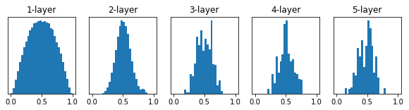
다시 그린 그림 · 누르면 원본그림 읽기: 축은 12·13의 그림과 같습니다. 1층은 0.05 ~ 0.95에 걸친 넓은 종 모양, 2층부터는 조금 좁아지고 막대가 들쭉날쭉하지만 12(0·1에 몰림)나 13(0.5에 몰림)보다 훨씬 넓게 퍼져 있습니다.
| 교안 문장 | 뜻 |
|---|---|
| The Xavier initialization is derived under the assumption that the activation function is linear. | Xavier 초기값은 활성화 함수가 선형이라고 가정하고 유도했습니다. |
| Since the sigmoid is symmetric and approximately linear near the center, they can be treated as linear functions in that region. | 시그모이드는 대칭이고 가운데 부근에서 거의 직선이라 그 구간에서는 선형 함수로 볼 수 있습니다. |
세 설정 비교 — 왜 Xavier가 두 문제를 함께 피하나
| 가중치 표준편차 | 1 | 0.01 | 0.1 (Xavier) |
|---|---|---|---|
| 1층 입력 합 a의 표준편차 | 9.97 | 0.100 | 0.997 |
| 활성화 표준편차 (1층 → 2 ~ 5층) | 0.46 → 0.43 ~ 0.44 | 0.025 → 0.011 ~ 0.013 | 0.207 → 0.112 ~ 0.124 |
| 포화 비율 (0.05 미만, 0.95 초과) | 64 ~ 77% | 0% | 0 ~ 0.4% |
| y(1 − y)의 평균 | 0.04 ~ 0.06 | 0.25 | 0.21 ~ 0.24 |
| 문제 | 기울기 소실 | 표현력 제한 | 없음 |
Xavier는 미분값이 크고(포화 없음) 값도 퍼져 있어(표준편차 0.1 이상) 두 문제를 함께 피합니다. 포화 비율은 시드 0 ~ 4의 범위입니다.
| a | 0.5 | 1 | 2 | 4 |
|---|---|---|---|---|
| 시그모이드 | 0.6225 | 0.7311 | 0.8808 | 0.982 |
| 직선 0.5 + a4 | 0.625 | 0.75 | 1.0 | 1.5 |
a가 0 근처(약 ±1)이면 직선과 거의 같습니다. Xavier는 a의 표준편차를 약 1로 두어 이 구간을 주로 쓰게 합니다.
반대로 바꾸면 틀리는 문장: Xavier는 앞 층 뉴런이 많을수록 가중치를 크게 한다 → X (작게). n은 다음 층 뉴런 수다 → X (앞 층, 교안 기준). Xavier는 활성화 함수가 비선형이라고 가정한다 → X (선형).
He 초기값 Weight Initialization: He Initialization
ReLU를 쓸 때는 ReLU에 맞춘 초기화 방법을 권장합니다 → He 초기값. When using ReLU activation, it is recommended to use an initialization method specialized for ReLU.
W ~ N(0, 2n) n = 앞 층의 노드 수
분산 2n → 표준편차 √(2 ÷ n) (보충)
| 교안 문장 | 뜻 |
|---|---|
| Since ReLU outputs zero for negative values, the distribution needs to be wider; hence the factor of 2. | ReLU는 음수 입력에 0을 내므로 분포가 더 넓어야 하고, 그래서 2를 곱합니다. |
입력 합 a가 0을 중심으로 퍼져 있으면 절반은 음수이고, ReLU가 그 절반을 0으로 만듭니다. 그래서 ReLU 출력의 제곱평균이 a의 분산의 절반이 됩니다(Python 검산: 표준정규분포 100만 개로 0.5007). 줄어든 절반을 메우려고 가중치 분산을 Xavier의 2배로 둡니다.
반대로 바꾸면 틀리는 문장: He 초기값은 시그모이드용이다 → X (ReLU용). He는 분포를 더 좁게 한다 → X (더 넓게, 2배 분산). He의 2는 뒤 층과 앞 층 두 개를 센 것이다 → X (ReLU가 절반을 0으로 만들기 때문).
Xavier와 He — 표준편차와 쓰는 곳
| n | Xavier 1√n | He √(2 ÷ n) |
|---|---|---|
| 50 | 0.141 | 0.2 |
| 100 | 0.1 | 0.141 |
| 784 | 0.0357 | 0.0505 |
같은 n이면 He는 Xavier보다 표준편차가 √2 ≈ 1.414배 큽니다. n이 클수록 둘 다 작아집니다.
| 활성화 함수 | 권장 초기값 |
|---|---|
| 시그모이드, tanh (가운데가 거의 직선, 대칭) | Xavier |
| ReLU (음수 절반을 0으로) | He |
tanh는 P1 16에서 봤고, Xavier를 tanh에 쓰는 것은 이 교안이 아니라 책 기준입니다 (보충). ReLU는 P1 16, 그 역전파는 P3 08.
P2 21의 TwoLayerNet(784 → 50 → 10, 시그모이드)에 Xavier를 쓴다면 W1은 표준편차 0.0357, W2는 0.141이 됩니다. 교안 코드는 두 층 모두 0.01을 썼습니다(→ P2 21) (보충).
다음 16에서 ReLU 신경망에 표준편차 0.01, Xavier, He를 실제로 비교합니다.
ReLU에서의 가중치 초기값 Weight Initialization for ReLU Activation
0.01
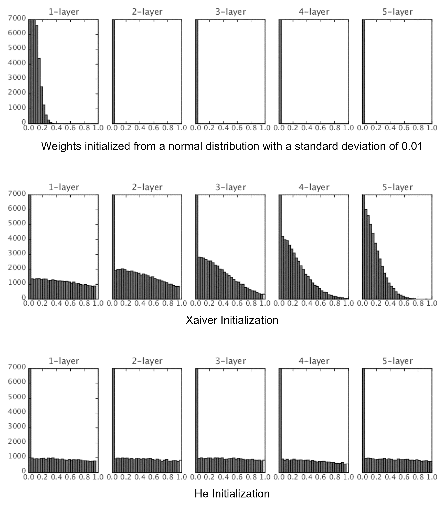
다시 그린 그림 · 누르면 원본그림 읽기: 3행 × 5열. 행 = 초기값, 열 = 1 ~ 5층. 가로축 활성화값 0.0 ~ 1.0, 세로축 개수(0 ~ 7000).
| 행 (캡션) | 보이는 것 |
|---|---|
| ① 표준편차 0.01 | 1층은 0 ~ 0.3에 몰리고, 2층부터는 0 위치의 막대 하나뿐 → 신호가 층마다 줄어 거의 0 |
| ② Xavier (원문 "Xaiver") | 1층은 거의 평평하지만 층이 깊을수록 0 쪽으로 치우침(왼쪽 막대가 1400 → 6000) |
| ③ He | 다섯 층 모두 약 1000 높이로 고르게 평평 → 층이 깊어져도 분포 유지 |
모든 패널의 맨 왼쪽(0.0) 막대는 7000을 넘어 잘려 있습니다. ReLU는 입력이 음수면 정확히 0을 내므로, 출력의 약 절반(약 50%)이 0입니다(Python 재현: 층마다 46 ~ 52%). 또 그림은 0 ~ 1 구간만 그렸고, Xavier·He에서는 1보다 큰 값도 나옵니다(He 1층 최대 약 6.1, 재현값) (보충).
층마다 신호가 몇 배가 되나 (보충) Python 시뮬레이션
12와 같은 설정(입력 1000 × 100, 5층 · 100개 뉴런)에 ReLU를 썼습니다. 각 층 출력의 크기를 제곱평균의 제곱근(RMS)으로 쟀습니다(입력은 약 1.0, 시드 0).
| 초기값 (표준편차) | 1층 | 2층 | 3층 | 4층 | 5층 | 층마다 |
|---|---|---|---|---|---|---|
| 0.01 | 0.0705 | 0.0050 | 0.00037 | 0.000026 | 0.0000021 | 약 0.07배 |
| Xavier (0.1) | 0.705 | 0.500 | 0.371 | 0.260 | 0.211 | 약 0.7배 |
| He (0.141) | 0.998 | 1.000 | 1.049 | 1.041 | 1.196 | 약 1배 |
배율의 이론값 (보충): 층 하나를 지날 때 크기는 (표준편차) × √n × √(1 ÷ 2)배입니다(√(1 ÷ 2)는 ReLU가 절반을 0으로 만들기 때문, 15). n = 100이면
- 0.01 × 10 × 0.707 = 0.0707 → 5층이면 거의 0
- 0.1 × 10 × 0.707 = 0.707 → 층마다 30%씩 줄어 0 쪽으로 치우침
- 0.141 × 10 × 0.707 = 1.0 → 크기 유지
시뮬레이션의 배율이 이론값과 거의 같고, 히스토그램 세 행의 모양(① 0으로 사라짐, ② 점점 0 쪽, ③ 평평)과 같습니다. Xavier는 ReLU의 "절반이 0"을 고려하지 않아 층마다 조금씩 줄어드는 것입니다.
Python 재현: 0 ~ 1을 30구간으로 나눈 히스토그램에서 Xavier의 둘째 구간 개수가 1층 약 1300 → 5층 약 4400으로 늘고(5층 값은 시드에 따라 약 4100 ~ 5900), He는 층마다 약 900 ~ 1000으로 비슷합니다(그림의 막대 높이와 같은 흐름).
- ReLU에 Xavier를 쓰면 층이 깊을수록 분포가 1 쪽으로 치우친다 → X (0 쪽)
- He 초기값에서는 층이 깊어질수록 활성화가 0으로 사라진다 → X (고르게 유지)
초기값에 따른 손실 감소 — MNIST 학습
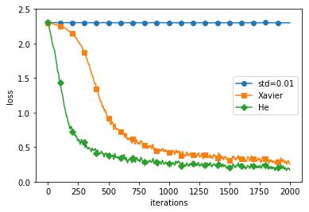
그림 읽기: 가로축 iterations(반복 0 ~ 2000), 세로축 loss(0 ~ 2.5). 값은 그래프에서 읽은 근사치입니다.
| 선 | 모양 | 2000회 무렵 |
|---|---|---|
| 파랑 ● std=0.01 | 처음부터 끝까지 약 2.3에서 수평 — 학습이 전혀 안 됨 | 약 2.3 |
| 주황 ■ Xavier | 200회까지 천천히, 300 ~ 500회에 급격히 감소 | 약 0.27 |
| 초록 ◆ He | 가장 빨리 감소(100회에 약 1.4) | 약 0.18 |
시작값 약 2.3의 뜻 (보충): 10개 클래스에 모두 0.1씩 예측하면 교차 엔트로피는 −log 0.1 = log 10 = 2.3026입니다(→ P2 02, Python 검산). std=0.01은 신호가 0으로 사라져 출력이 사실상 균등 예측에 머물고, 기울기도 거의 0이라 그 자리에서 움직이지 못합니다.
교안에는 신경망 구조·학습률 등 실험 조건이 적혀 있지 않습니다(MNIST로 추정 — 손실 시작값 2.3이 10클래스와 맞음) (추측).
반대로 바꾸면 틀리는 문장: ReLU 신경망에서 가장 빨리 학습한 것은 Xavier다 → X (He). std=0.01은 천천히라도 손실이 줄었다 → X (수평).
Part 2 정리 — 가중치 초기값
- 모두 같은 값(0 포함)이면 뉴런의 출력·기울기·갱신이 모두 같아 대칭이 깨지지 않음 → 무작위로 초기화.
- 초기값의 크기(표준편차)가 활성화 분포를 정함. 활성화 분포를 보면 학습이 잘 될지 짐작할 수 있음.
- Xavier: N(0, 1n), 표준편차 1√n, 시그모이드·tanh용(선형 가정). He: N(0, 2n), 표준편차 √(2 ÷ n), ReLU용. n = 앞 층 노드 수.
| 활성화 함수 | 초기값 (n = 100) | 활성화 분포 | 문제 · 결과 | 섹션 |
|---|---|---|---|---|
| 시그모이드 | 표준편차 1 | 0과 1에 몰림 (U자) | 기울기 소실 | 12 |
| 시그모이드 | 표준편차 0.01 | 0.5에 몰림 | 표현력 제한 | 13 |
| 시그모이드 | Xavier (0.1) | 넓게 퍼짐 | 포화 없음 | 14 |
| ReLU | 표준편차 0.01 | 층마다 약 0.07배 → 0 | 학습 안 됨 (손실 2.3 수평) | 16 |
| ReLU | Xavier (0.1) | 깊을수록 0 쪽 치우침 | 학습은 되지만 느림 | 16 |
| ReLU | He (0.141) | 층마다 고르게 유지 | 가장 빠름 | 16 |
다음 Part 3의 배치 정규화는 초기값에 맡기지 않고 각 층에서 분포를 직접 맞추는 방법입니다(→ 17–20).
배치 정규화
내부 공변량 변화 Internal Covariate Shift
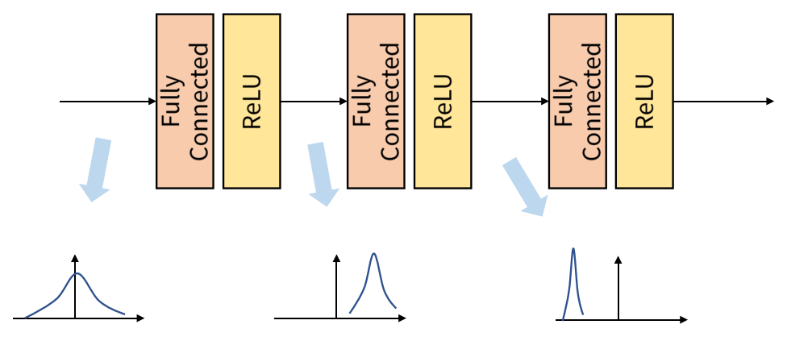
다시 그린 그림 · 누르면 원본그림 읽기: 왼쪽 → 오른쪽으로 [Fully Connected(주황) → ReLU(노랑)] 블록이 3번 이어집니다. 하늘색 화살표는 각 Fully Connected로 들어가는 값의 분포를 가리킵니다: ① 0 중심의 넓은 종 모양 → ② 양수 쪽으로 치우친 좁은 봉우리 → ③ 음수 쪽으로 치우친 아주 뾰족한 봉우리. 층마다 분포의 위치와 폭이 다릅니다.
Fully Connected = 완전연결 계층, 이 교안 묶음에서는 Affine 계층(→ P3 12)과 같은 것입니다 (보충). 그림 출처: gaussian37 블로그(교안에 URL 표기).
| 교안 문장 | 뜻 |
|---|---|
| During training, the distribution of layer inputs changes continuously (internal covariate shift), which makes optimization slower and unstable. | 학습하는 동안 각 층 입력의 분포가 계속 바뀌고(내부 공변량 변화), 이것이 최적화를 느리고 불안정하게 만듭니다. |
| Different mini-batches can have different data distributions. | 미니배치마다 데이터 분포가 다를 수 있습니다. |
2층의 입력은 1층의 출력입니다. 1층 가중치가 갱신될 때마다 1층 출력이 바뀌므로, 2층은 매번 조금 다른 분포의 입력을 받습니다. 뒤층은 앞층이 바뀌는 것에 계속 맞춰야 해서 학습이 느려집니다. 여기에 미니배치(→ P2 08)마다 뽑힌 데이터도 달라 분포가 또 흔들립니다.
용어: 공변량(covariate) = 입력 변수. "내부" = 신경망 안쪽 층의 입력. (보충) 그림 URL의 "covariant"는 원문 표기 그대로입니다.
배치 정규화 Batch Normalization
| 교안 문장 | 뜻 |
|---|---|
| Batch normalization normalizes the input of each layer using the statistics of a mini-batch, so that the distribution of the activations remains stable during training. | 배치 정규화는 각 층의 입력을 미니배치의 통계(평균·분산)로 정규화해서, 학습하는 동안 활성화 분포가 안정되게 합니다. |
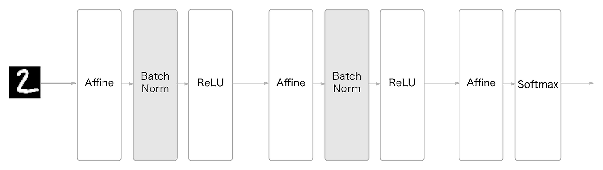
다시 그린 그림 · 누르면 원본그림 읽기: 입력(MNIST 숫자 "2") → Affine → Batch Norm → ReLU → Affine → Batch Norm → ReLU → Affine → Softmax. 회색 상자가 배치 정규화 계층입니다. Affine과 활성화 함수(ReLU) 사이에 들어가고, 마지막 Affine 뒤에는 없습니다(바로 Softmax).
"배치"의 뜻: 통계를 데이터 전체가 아니라 지금 들어온 미니배치로 냅니다(→ P2 07·08). 미니배치 크기가 100이면 100개의 평균·분산입니다. P3 13의 배치 Affine 계층처럼 데이터 여러 개를 한꺼번에 다룹니다 (보충).
배치 정규화의 식 Batch Normalization: Formulation
미니배치 {x1, x2, …, xm}이 주어지면 (m = 미니배치 크기)
σB2 = 1m ∑i=1m (xi − μB)2 ②
x̂i = xi − μB√σB2 + ε ③
| 기호 | 뜻 | |
|---|---|---|
| ① | μB batch mean | 미니배치 평균 |
| ② | σB2 batch variance | 미니배치 분산 — 평균에서 떨어진 거리의 제곱을 평균. m으로 나눔 |
| ③ | x̂i (엑스 햇) | 평균을 빼고(가운데를 0으로) 표준편차로 나눔(폭을 1로) |
| ε small constant for numerical stability | 계산을 안정시키는 아주 작은 상수(예: 10−7) |
결과: x̂의 평균은 0, 분산은 1(ε 때문에 아주 조금 1보다 작음). 원래 값이 어디에 얼마나 퍼져 있었든 같은 기준으로 맞춰집니다.
B는 batch의 첫 글자입니다. 분산을 m − 1이 아니라 m으로 나눕니다(교안 식 그대로) (보충). 평균·분산은 "미리 짚을 개념"에서 다룬 것과 같습니다.
값 4개로 따라가기 (보충) 이해용 계산, Python 검산
뉴런 하나에 미니배치 4개(m = 4)의 값 x = (1, 3, 5, 7)이 들어왔다고 합시다. ε = 10−7.
| 단계 | 계산 | 결과 |
|---|---|---|
| ① 평균 μB | (1 + 3 + 5 + 7) ÷ 4 | 4 |
| xi − μB | 각 값 − 4 | −3, −1, 1, 3 |
| ② 분산 σB2 | (9 + 1 + 1 + 9) ÷ 4 | 5 |
| √σB2 + ε | √5 | 2.236 |
| ③ x̂i | (−3, −1, 1, 3) ÷ 2.236 | −1.342, −0.447, 0.447, 1.342 |
| 확인 | x̂의 평균, 분산 | 0, 1 |
다음 미니배치가 x = (11, 13, 15, 17)이면 μB = 14, σB2 = 5이고 x̂은 똑같이 (−1.342, −0.447, 0.447, 1.342)입니다. 입력이 통째로 10만큼 옮겨져도(17의 "분포가 바뀜") 다음 층이 받는 값은 같습니다.
x = (2, 2, 2, 2)처럼 값이 모두 같으면 σB2 = 0이라 ε가 없으면 0으로 나누게 됩니다. ε가 있으면 분모가 √10−7이고 분자가 0이라 x̂ = 0으로 계산됩니다. 이것이 "numerical stability(수치 안정성)"입니다.
입력이 여러 개(특징 여러 개)면 특징(열)마다 따로 평균·분산을 냅니다. 예: x = (1, 2), (3, 6), (5, 4), (7, 8) → μB = (4, 5), σB2 = (5, 5) (Python 검산).
정규화 다음: 스케일과 이동 Batch Normalization: Scaling & Effects
정규화한 뒤의 스케일 조정 Scaling after normalization
yi = γ x̂i + β
| 기호 | 뜻 |
|---|---|
| γ (감마) | 스케일scale — 학습하는 배율 매개변수 learnable scaling parameter |
| β (베타) | 이동shift — 학습하는 이동 매개변수 learnable shifting parameter |
학습은 γ = 1, β = 0에서 시작하고, 학습하면서 알맞은 값으로 조정됩니다(교안 밑줄). Training starts with γ = 1 and β = 0, they are adjusted to optimal values during learning.
γ, β는 가중치처럼 역전파로 기울기를 구해 갱신하는 매개변수입니다 — 하이퍼파라미터(→ 24)가 아닙니다 (보충).
| γ, β | y | 평균 | 표준편차 |
|---|---|---|---|
| 1, 0 (시작값) | −1.342, −0.447, 0.447, 1.342 | 0 | 1 |
| 2, 0.5 | −2.183, −0.394, 1.394, 3.183 | 0.5 (= β) | 2 (= γ) |
| 2.236, 4 | 1, 3, 5, 7 | 4 | 2.236 |
γ = 1, β = 0이면 y = x̂(정규화 결과 그대로). 출력의 평균은 β, 표준편차는 γ가 됩니다. 마지막 줄처럼 γ = 원래 표준편차, β = 원래 평균이면 정규화 전 값으로 되돌아갑니다 — 정규화가 맞지 않으면 학습으로 되돌릴 수도 있다는 뜻입니다 (보충 해석).
반대로 바꾸면 틀리는 문장: 학습은 γ = 0, β = 1에서 시작한다 → X (γ = 1, β = 0). γ와 β는 사람이 정해 두고 바꾸지 않는다 → X (학습으로 조정).
배치 정규화의 효과 Effects
| 교안 | 뜻과 연결 |
|---|---|
| Reduces internal covariate shift | 내부 공변량 변화를 줄임 — 층 입력의 평균·분산을 맞추므로(→ 17) |
| Allows higher learning rates (faster training) | 학습률을 더 크게 쓸 수 있음 → 학습이 빨라짐(학습률 → P2 16) |
| Less sensitive to weight initialization | 초기값에 덜 민감 — Part 2처럼 초기값을 잘못 골라도 각 층에서 분포를 다시 맞춤(→ 12–16) |
| Regularization effect (reduces overfitting) | 규제 효과 — 과적합을 줄임(과적합 → 21) |
"규제 효과"가 생기는 이유는 교안에 없습니다. 미니배치마다 평균·분산이 조금씩 달라 같은 데이터도 매번 약간 다르게 정규화되어 잡음이 섞이는 효과로 설명하는 경우가 많습니다 (보충, 추측 수준).
배치 정규화 = 미니배치 단위로 평균 0 · 분산 1로 정규화 → γ배, β 이동. 효과 4가지: 공변량 변화 ↓, 학습률 ↑(빠름), 초기값 민감도 ↓, 과적합 ↓.
- 배치 정규화는 데이터 전체의 평균·분산으로 정규화한다 → X (미니배치)
- 배치 정규화를 쓰면 학습률을 작게 해야 한다 → X (더 크게 쓸 수 있음)
- 배치 정규화는 초기값에 더 민감해진다 → X (덜 민감)
- 배치 정규화는 과적합을 늘린다 → X (줄임)
- 배치 정규화 계층은 활성화 함수 뒤에 둔다 → X (교안 그림: Affine과 ReLU 사이)
배치 정규화 유무에 따른 훈련 정확도
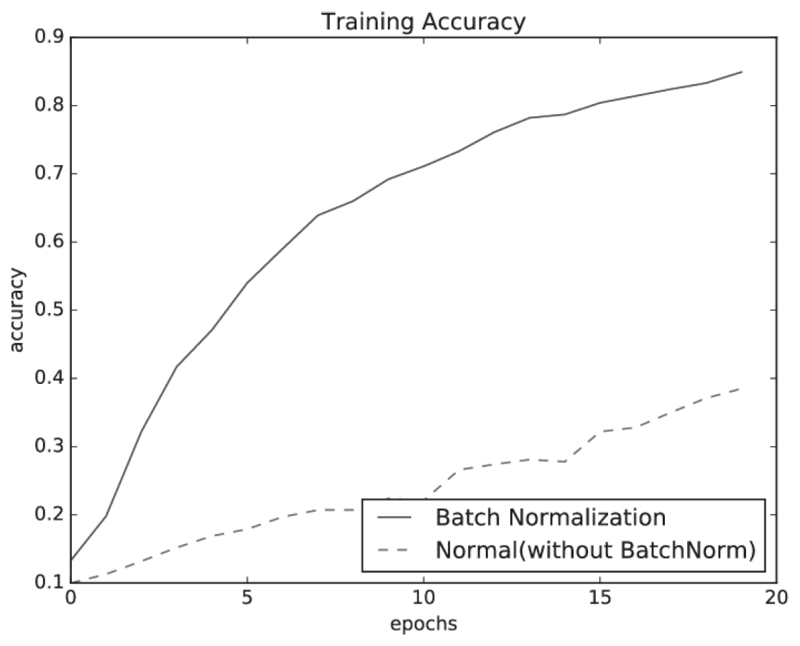
그림 읽기: 제목 Training Accuracy(훈련 정확도). 가로축 epochs(에폭 0 ~ 20), 세로축 accuracy(0.1 ~ 0.9). 실선 = 배치 정규화 있음, 파선 = 없음(Normal). 값은 그래프에서 읽은 근사치입니다.
| 에폭 | 0 | 5 | 10 | 19 |
|---|---|---|---|---|
| 실선 (Batch Normalization) | 약 0.13 | 약 0.54 | 약 0.71 | 약 0.85 |
| 파선 (without BatchNorm) | 약 0.10 | 약 0.18 | 약 0.22 | 약 0.39 |
→ 같은 에폭에서 배치 정규화를 쓴 쪽의 정확도가 훨씬 높습니다. 교안 26쪽 효과의 "학습이 빨라짐"을 보여 주는 그림입니다.
교안 27쪽은 그래프 한 장뿐이고 신경망 구조·데이터·초기값 등 실험 조건이 적혀 있지 않습니다. 이것은 훈련 정확도라서 과적합(시험 정확도)에 대해서는 이 그림으로 말할 수 없습니다 (보충).
반대로 바꾸면 틀리는 문장: 27쪽 그래프에서 실선이 배치 정규화를 쓰지 않은 경우다 → X (실선 = 사용, 파선 = 미사용).
Part 3 정리 — 배치 정규화
- 내부 공변량 변화: 학습 중 앞층 가중치가 바뀌면서 각 층 입력의 분포가 계속 바뀜 → 최적화가 느리고 불안정. 미니배치마다 분포도 다름.
- 배치 정규화: 각 층의 입력을 미니배치의 평균·분산으로 정규화. 위치는 Affine → Batch Norm → ReLU(마지막 Affine 뒤에는 없음).
- 식: μB = 평균, σB2 = 분산(m으로 나눔), x̂ = x − μB√σB2 + ε → 평균 0, 분산 1. ε = 0으로 나누기를 막는 작은 상수. 예: (1, 3, 5, 7) → μ 4, σ2 5, x̂ = ±0.447, ±1.342.
- y = γx̂ + β: γ(스케일)·β(이동)는 학습하는 매개변수, γ = 1, β = 0에서 시작. 출력의 평균 = β, 표준편차 = γ.
- 효과: 내부 공변량 변화 ↓ · 학습률 ↑(빠른 학습) · 초기값 민감도 ↓ · 규제 효과(과적합 ↓). 27쪽: 같은 에폭에서 훈련 정확도 약 0.85 vs 약 0.39.
- 다음 Part 4는 과적합을 막는 기술(가중치 감소·드롭아웃)입니다(→ 21–23).
과적합을 막는 기술
딥러닝의 과적합 Overfitting in Deep Learning
| 교안 원문 | 번역 |
|---|---|
| Deep learning aims for generalization performance — meaning that a good model should correctly make predictions even on data it has never seen before (test dataset). | 딥러닝의 목표는 일반화generalization 성능이다. 좋은 모델은 한 번도 본 적 없는 데이터(시험 데이터)에서도 올바르게 예측해야 한다. |
| Overfitting refers to a state where a neural network becomes excessively tailored to the training data and cannot generalize well to data outside the training set. | 과적합overfitting = 신경망이 훈련 데이터에 지나치게 맞춰져 훈련 데이터 밖의 데이터에서는 잘 일반화하지 못하는 상태. |
| Although it is possible to build highly complex and expressive models, techniques to prevent overfitting become increasingly important. | 매우 복잡하고 표현력이 큰 모델을 만들 수는 있지만, 그럴수록 과적합을 막는 기술이 더 중요해진다. |
| Overfitting typically occurs in the following situations: Excessive model complexity (too many parameters) · Insufficient training data | 과적합이 주로 일어나는 상황: ① 모델이 지나치게 복잡(매개변수가 너무 많음) ② 훈련 데이터가 부족 |
기계학습 교안 25쪽의 과적합과 같은 개념입니다. 훈련 데이터는 잘 맞히지만 시험 데이터에서는 성능이 떨어집니다. 그때 해결책으로 든 규제regularization가 이 Part의 가중치 감소(→ 22)와 드롭아웃(→ 23)입니다.
반대는 과소적합underfitting: 모델이 너무 단순해 훈련 데이터도 못 맞힘.
- "매개변수가 적을수록 과적합이 잘 일어난다" ✗ — 많을수록
- "훈련 데이터가 많으면 과적합이 일어난다" ✗ — 부족할 때
- "과적합 = 훈련 데이터에서 성능이 낮은 것" ✗ — 훈련은 높고 처음 보는 데이터에서 낮음
과적합된 신경망의 정확도 — 30쪽 그래프 읽기
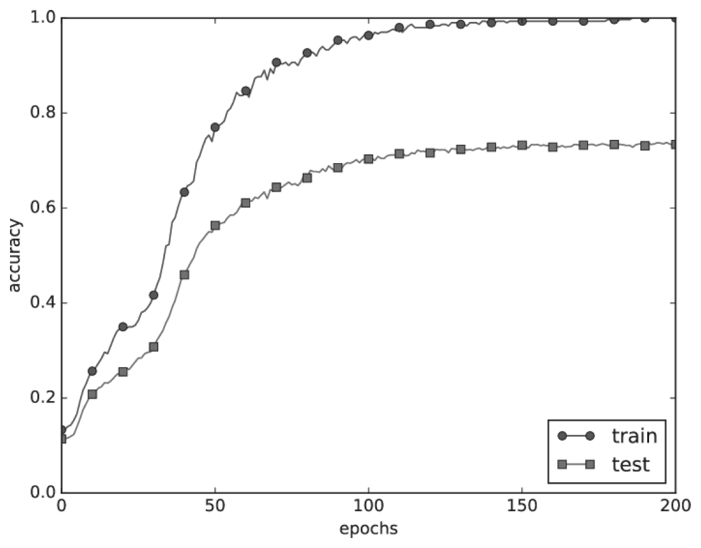
| 그림 요소 | 뜻 |
|---|---|
| 가로축 epochs | 에폭(→ P2 05). 0–200 |
| 세로축 accuracy | 정확도 0–1 |
| ● train | 훈련 데이터 정확도 |
| ■ test | 시험 데이터 정확도 |
| 200에폭 무렵 | 값 (그래프에서 눈으로 읽은 근삿값) |
|---|---|
| 훈련 | 약 1.0(120에폭부터 0.99 안팎) |
| 시험 | 약 0.73(140에폭쯤부터 거의 그대로) |
| 차이 | 약 0.27 |
훈련 정확도는 계속 올라 100%에 붙는데 시험 정확도는 멈춰 있습니다. 두 곡선 사이가 벌어진 것이 과적합의 모습입니다. P2 학습 스크립트가 에폭마다 train_acc와 test_acc를 함께 기록한 이유가 이것입니다(→ P2 20) (보충).
(보충, 책 기준) 교안에는 실험 조건이 없습니다. 책은 일부러 과적합을 만들려고 MNIST 훈련 데이터를 300개로 줄이고 7층 신경망(층마다 뉴런 100개, ReLU)을 썼습니다. 29쪽의 두 원인(매개변수 많음 + 데이터 부족)을 함께 만든 것입니다.
가중치 감소 Weight Decay (L2 Regularization)
Weight decay is a regularization technique used to prevent overfitting. Overfitting often occurs when weights become excessively large. Weight decay penalizes large weights during training, encouraging smaller values.
가중치 감소는 과적합을 막는 규제 기법입니다. 과적합은 가중치가 지나치게 커질 때 자주 일어납니다. 그래서 학습 중에 큰 가중치에 벌점(penalty)을 주어 가중치가 작은 값이 되도록 유도합니다.
| Ldata | 원래 손실(예: 교차 엔트로피, → P2 02) |
| λ (람다) | 규제 강도regularization strength, 벌점 계수. 사람이 정하는 하이퍼파라미터(→ 24) |
| ‖W‖22 | 가중치 모든 원소의 제곱 합(L2 노름의 제곱) |
| 12 | 미분하면 2와 약분되어 λW로 깔끔해지도록 붙인 것 (보충) |
| 무엇이 바뀌면 | 어떻게 되나 |
|---|---|
| 가중치가 커지면 | 제곱 합이 커져 손실이 커짐. 손실을 줄이려면 가중치를 작게 유지해야 함 |
| λ = 0 | 벌점이 없음 = 원래 손실과 같음(규제 없음) |
| λ를 키우면 | 가중치를 더 강하게 작게 만듦. 너무 크면 데이터에 맞추지 못해 과소적합이 될 수 있음 (보충) |
SVM의 C는 오류에 주는 벌점이라 C를 키우면 과적합 쪽입니다. 여기 λ는 가중치 크기에 주는 벌점이라 λ를 키우면 과적합을 막는 쪽(지나치면 과소적합)입니다. "벌점을 키운다"는 말만 보고 같은 방향으로 외우면 틀립니다.
(보충, 책 기준) 벌점은 각 층의 가중치 W에만 더하고 편향 b에는 보통 더하지 않습니다.
기울기와 갱신식 — 매 단계 가중치를 조금씩 0 쪽으로 당김
교안의 기울기 Gradient update
W ← W − η(∂Ldata∂W + λW)
원래 기울기에 λW가 더해질 뿐입니다. 오차역전파로 구한 기울기(→ P3)에 λW만 더해 SGD(→ 01)로 갱신합니다.
(보충) 같은 식을 정리하면
매 갱신마다 가중치에 1보다 조금 작은 수 (1 − ηλ)를 곱해 줄인(decay) 다음 원래 SGD를 합니다. 이름 "가중치 감소"가 여기서 나왔습니다. W가 양수면 λW도 양수라 빼면 줄고, 음수면 늘어납니다. 어느 쪽이든 0 쪽으로 당겨집니다.
η = 0.1, λ = 0.1이라고 정합니다(이해용으로 정한 값).
| 상황 | 결과 |
|---|---|
| w = 3, ∂Ldata∂w = 0일 때 SGD | 3 − 0.1 × 0 = 3 (그대로) |
| 같은 경우 가중치 감소 | 3 − 0.1 × (0 + 0.3) = 2.97 = 0.99 × 3 |
| 그렇게 100번 갱신 | 0.99100 ≈ 0.366배 |
벌점 항의 크기: W = [[1, −2], [3, 0.5]]이면
| ‖W‖22 | 1 + 4 + 9 + 0.25 = 14.25 |
| 12λ‖W‖22 | 0.5 × 0.1 × 14.25 = 0.7125 (λ = 0.01이면 0.07125, λ = 1이면 7.125) |
| 더해지는 기울기 λW | [[0.1, −0.2], [0.3, 0.05]] — 수치 미분(→ P2 11)과 일치 |
가장 큰 원소 3에 가장 큰 벌점 기울기 0.3이 붙습니다. 큰 가중치일수록 더 세게 줄입니다.
가중치 감소를 쓴 정확도 — 30쪽과 나란히 보기
30쪽 · 가중치 감소 없음
32쪽 · 가중치 감소 사용 Accuracy trends on training and test data when using weight decay
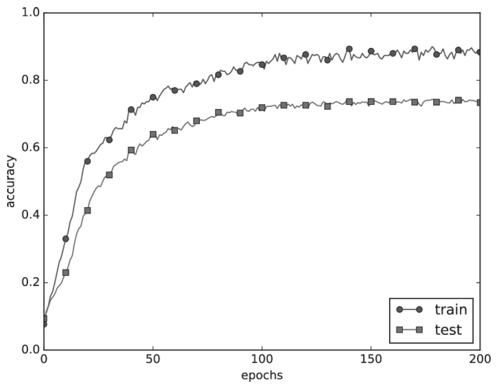
| 200에폭 무렵 | 30쪽 (없음) | 32쪽 (가중치 감소) |
|---|---|---|
| 훈련 정확도 | 약 1.0 | 약 0.88 (100%에 닿지 않음) |
| 시험 정확도 | 약 0.73 | 약 0.74 |
| 차이 | 약 0.27 | 약 0.15로 줄어듦 |
훈련과 시험의 차이가 줄었습니다 = 과적합이 억제됨. 값은 그래프에서 눈으로 읽은 근삿값입니다.
(보충, 그래프 읽기) 줄어든 것은 주로 훈련 정확도입니다. 시험 정확도는 0.73 → 0.74 정도로 거의 같습니다. "가중치 감소를 쓰면 시험 정확도가 크게 오른다"고 이 그림만으로 말할 수는 없습니다. (책 기준) 이 실험의 λ는 0.1입니다.
드롭아웃 Dropout: Motivation
| 교안 원문 | 번역 |
|---|---|
| As neural networks become more complex, weight decay alone may be insufficient to prevent overfitting. | 신경망이 복잡해지면 가중치 감소만으로는 과적합을 막기에 부족할 수 있다. |
| Dropout provides an additional regularization mechanism by randomly removing units during training. | 드롭아웃은 훈련 중에 유닛(뉴런)을 무작위로 지워 추가 규제를 제공한다. |
| Typical keep probability: p ∈ [0.5, 0.9] depending on layer. | 일반적인 유지 확률keep probability p는 층에 따라 0.5–0.9. (p의 뜻 주의 → 다음다음 장) |
| Dropout combats overfitting by discouraging co-adaptation of features. | 특징들의 공동 적응co-adaptation을 막아 과적합에 맞선다. |
(보충) 공동 적응 = 어떤 뉴런이 특정한 다른 뉴런과 함께 있을 때만 쓸모 있는 특징을 배우는 것. 같이 쓰던 뉴런이 언제 꺼질지 모르니 각 뉴런이 혼자서도 쓸모 있는 특징을 배우게 됩니다.
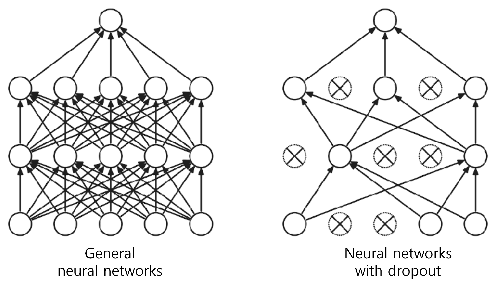
다시 그린 그림 · 누르면 원본| 그림 | 읽는 법 |
|---|---|
| 왼쪽 일반 신경망 | 아래(입력) 5 → 5 → 5 → 위(출력) 1. 이웃한 층끼리 모두 연결 |
| 오른쪽 드롭아웃 | ⊗ = 지운 뉴런. 입력층 2개, 아래 은닉층 3개, 위 은닉층 2개를 지움. 출력은 그대로 |
| 화살표 | 남은 뉴런끼리만 있음. 지운 뉴런으로는 신호가 전해지지 않음 |
(보충, 책 기준) 지울 뉴런은 데이터를 흘릴 때마다(순전파마다) 새로 무작위로 고릅니다.
훈련 때와 시험 때 — 출력 크기를 맞추기 (보충, 책 기준)
교안에는 시험 때 어떻게 하는지가 없습니다(→ 29). 책의 방식은 다음과 같습니다. r = 지우는 비율dropout ratio.
| 훈련 때 | 시험 때 | |
|---|---|---|
| 뉴런 | 순전파마다 비율 r만큼 무작위로 출력을 0으로 | 모두 사용(지우지 않음) |
| 출력 | 살아남은 뉴런은 x 그대로 | x × (1 − r) |
| 역전파 | 지운 뉴런은 0, 산 뉴런은 그대로 흘림(ReLU와 같은 모양, → P3 08) | — |
왜 (1 − r)을 곱하나: 훈련 때 각 뉴런은 평균적으로 (1 − r)의 확률로만 살아 있었습니다. 그래서 훈련 때의 평균 출력은 x(1 − r)입니다. 시험 때 모두 켜면 출력이 그보다 커지므로 (1 − r)을 곱해 크기를 맞춥니다.
x = 2, r = 0.5: 훈련 때 출력은 0 또는 2(각 확률 0.5) → 평균 1. 시험 때 2 × (1 − 0.5) = 1. 같습니다. 뉴런 10만 개로 200번 흉내 내면 (훈련 평균) ÷ x = 0.500(r = 0.5), 0.850(r = 0.15)으로 1 − r과 일치했습니다.
책의 Dropout 계층 (보충 — 교안 코드 아님)
| 8 | 0–1 난수가 r보다 크면 True(남김). True일 확률 = 1 − r. 예: mask가 (T, F, T, F)이면 (2, 4, 6, 8) → (2, 0, 6, 0) |
| 11 | 시험 때: 모두 쓰고 (1 − r)을 곱함 |
| 14 | 역전파: 지운 자리는 0, 남긴 자리는 그대로 |
(보충) PyTorch(→ 09)의 nn.Dropout(p)은 반대로 훈련 때 남은 출력을 (1 − p)로 나누고 시험 때는 그대로 둡니다(inverted dropout). 평균을 맞춘다는 목적은 같습니다(Python 확인: 평균 ÷ x = 1.000).
p는 '남길 확률'인가 '지울 비율'인가 — 표기 주의
| 어디 | 표기 | 뜻 |
|---|---|---|
| 교안 33쪽 | keep probability p ∈ [0.5, 0.9] | 남길 확률 |
| 교안 34쪽 | dropout ratio = 0.15 | 지울 비율 → 남길 확률 0.85 |
| 교안 36쪽 | dropout rate p | 지울 비율로 읽힘(dropout = 지움) |
| 책 코드 | dropout_ratio | 지울 비율 |
| PyTorch | nn.Dropout(p) | 지울 확률 (보충) |
같은 교안 안에서 같은 글자 p가 33쪽에서는 남길 확률, 36쪽에서는 지울 비율입니다(→ 29). 문제에 p가 나오면 keep(남김)인지 drop(지움)인지 문장을 먼저 확인합니다.
지울 비율 0.15 → 남길 확률 1 − 0.15 = 0.85. 33쪽 유지 확률 범위 0.5–0.9 안에 들어갑니다. 뉴런 100만 개에 rand > 0.15 마스크를 씌우면 남은 비율이 0.850이었습니다.
- "유지 확률 p = 0.9 → 뉴런의 90%를 지운다" ✗ — 90%를 남김(10% 지움)
- "드롭아웃은 시험(추론) 때도 뉴런을 무작위로 지운다" ✗ — 지우는 것은 훈련 때(교안: during training)
- "드롭아웃은 가중치를 0으로 초기화한다" ✗ — 뉴런의 출력을 그때그때 0으로 만듦. 가중치 자체는 지우지 않음
드롭아웃을 쓴 정확도 — 34쪽 그래프 Left: without dropout, right: with dropout applied (dropout ratio = 0.15)
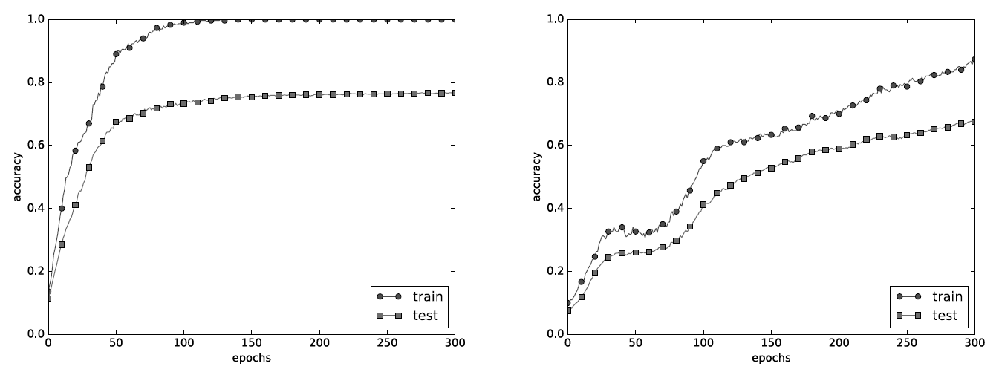
| 300에폭 무렵 | 왼쪽 (드롭아웃 없음) | 오른쪽 (r = 0.15) |
|---|---|---|
| 훈련 정확도 | 약 1.0 (110에폭쯤부터) | 약 0.87, 아직 오르는 중 |
| 시험 정확도 | 약 0.77 | 약 0.68, 아직 오르는 중 |
| 차이 | 약 0.23 | 약 0.19로 줄어듦 |
드롭아웃을 쓰면 훈련 정확도가 100%에 붙지 않고 두 곡선의 차이가 줄어듭니다 = 과적합 억제. 학습은 느려집니다. 값은 눈으로 읽은 근삿값입니다.
(보충, 그래프 읽기) 300에폭 시점의 시험 정확도는 오히려 오른쪽이 낮습니다(0.68 < 0.77). 학습이 느려 아직 덜 된 상태입니다. 이 그림이 보여 주는 것은 "격차가 줄어든다"이지 "시험 정확도가 더 높다"가 아닙니다. 가로축이 300에폭이라 30·32쪽(200에폭)과 다른 실험입니다.
드롭아웃과 앙상블 (보충, 책 기준 · → 중간 F2·F6)
훈련 때마다 뉴런을 다르게 지우므로 매번 조금씩 다른 신경망을 학습시키는 셈이고, 시험 때 모두 쓰고 (1 − r)을 곱하는 것은 그 신경망들의 평균과 비슷합니다. 배깅이 여러 모델을 평균해 분산을 낮춘 효과(→ 중간 F6)를 신경망 하나로 낸다는 설명입니다. 교안에는 없습니다.
Part 4 정리 — 과적합을 막는 기술
- 일반화 = 처음 보는 데이터(시험 데이터)에서도 잘 예측하는 것. 과적합 = 훈련 데이터에 지나치게 맞춰져 일반화하지 못하는 상태. 원인: 매개변수가 너무 많음, 훈련 데이터가 부족(29쪽).
- 30쪽: 훈련 정확도 약 1.0, 시험 정확도 약 0.73 — 두 곡선이 벌어진 것이 과적합(근삿값).
- 가중치 감소(L2 규제): Ltotal = Ldata + 12λ‖W‖22. 큰 가중치에 벌점. 기울기에 λW가 더해짐, W ← W − η(∂Ldata∂W + λW). 정리하면 매번 (1 − ηλ)배로 줄임(31쪽, 정리는 보충).
- λ = 0이면 규제 없음, λ를 키우면 가중치가 더 작아짐(지나치면 과소적합, 보충). 32쪽: 훈련 약 0.88, 시험 약 0.74 — 차이가 줄어듦.
- 드롭아웃: 훈련 때 뉴런을 무작위로 지움(출력 0). 가중치 감소만으로 부족할 때 추가 규제, 공동 적응을 막음(33쪽). 시험 때는 모두 쓰고 출력에 (1 − r)을 곱함(보충, 책 기준).
- p 표기 주의: 33쪽 keep probability p(남길 확률 0.5–0.9), 34쪽 dropout ratio 0.15(지울 비율 → 남길 0.85), 36쪽 dropout rate p(지울 비율). 34쪽: 격차 약 0.23 → 약 0.19, 학습은 느려짐.
하이퍼파라미터 찾기
하이퍼파라미터 Hyperparameters
Hyperparameters in neural networks: width/depth, learning rate, batch size, regularization (λ), dropout rate p, optimizer options, augmentation strength, etc.
| 교안이 든 하이퍼파라미터 | 이 자료에서 본 곳 |
|---|---|
| 너비 · 깊이 width · depth | 층의 뉴런 수 · 층 수. P2 TwoLayerNet의 hidden_size = 50(→ P2 21) |
| 학습률 learning rate η | → P2 16, 01 |
| 배치 크기 batch size | P2 batch_size = 100(→ P2 19), 배치 정규화의 미니배치(→ 19) |
| 규제 강도 λ | 가중치 감소(→ 22) |
| 드롭아웃 비율 p | → 23 |
| 옵티마이저 옵션 | Momentum의 α, Adam의 β1·β2(→ 03, 08) |
| 증강 강도 augmentation strength | 훈련 이미지를 회전·이동 등으로 늘리는 정도 (보충, 교안의 다른 곳에는 없음) |
(보충) 목록에는 없지만 가중치 초기값의 표준편차(P2 weight_init_std = 0.01, → 11–16)도 사람이 정하는 값입니다.
| 교안 원문 | 번역 |
|---|---|
| Hyperparameters control the inductive bias and capacity of the model. | 하이퍼파라미터는 모델의 귀납적 편향inductive bias과 용량capacity을 조절한다. |
| Poor choices cause under/overfitting and unstable training. | 잘못 고르면 과소적합·과적합, 불안정한 학습이 생긴다. |
(보충) 귀납적 편향 = 처음 보는 데이터를 어떤 쪽으로 일반화할지 모델에 미리 들어 있는 가정. 용량 = 모델이 나타낼 수 있는 함수의 복잡한 정도. 불안정한 학습의 예: 학습률이 너무 크면 발산(→ P2 16).
매개변수(W, b, 배치 정규화의 γ·β) = 학습이 데이터로 정함. 하이퍼파라미터 = 학습 전에 사람이 정함. 중간 범위의 K-means의 K(→ 중간 D7), SVM의 C(→ 중간 C5), DBSCAN의 ε·MinPts(→ 중간 D9)도 하이퍼파라미터입니다.
데이터를 셋으로 나누는 이유 — 시험 데이터로 고르면 안 됨
fit model parameters
choose hyperparameters
final unbiased estimate
Never tune on the test set. Otherwise you leak information and overfit to the test data.
시험 데이터로 튜닝하지 말 것. 그러면 정보가 새어 나가leak 시험 데이터에 과적합된다.
왜 (보충): 후보 여럿 중 시험 점수가 가장 좋은 것을 고르면, 그 하이퍼파라미터는 시험 데이터에 맞춰 고른 것입니다. 그러면 시험 점수는 진짜 처음 보는 데이터에서의 성능보다 좋게(낙관적으로) 나옵니다. 시험 데이터는 "한 번도 본 적 없는 데이터"(29쪽) 역할을 잃습니다.
MNIST는 훈련 60,000개와 시험 10,000개로만 나뉘어 있습니다. 책은 훈련 데이터의 20%를 떼어 검증 데이터로 씁니다: 60,000 → 훈련 48,000 + 검증 12,000. 시험 데이터 10,000개는 마지막까지 손대지 않습니다.
P2 학습 스크립트는 에폭마다 시험 정확도를 기록만 했습니다(→ P2 20). 그 값을 보고 학습률 등을 바꿔 다시 돌렸다면 그것이 시험 데이터로 튜닝한 것입니다(보충). 중간 범위 SVM에서 C를 교차 검증으로 고른 것(→ 중간 C5)도 같은 생각입니다.
하이퍼파라미터 튜닝 과정 Hyperparameter Tuning Process
목표 Goal: 검증 성능을 최대로 하는 하이퍼파라미터 값을 찾는다(Find hyperparameter values that maximize validation performance).
Define the search space
Sample hyperparameter candidates
Train & evaluate on validation set
Repeat and narrow down
2단계에서 평가하는 것은 시험 데이터가 아니라 검증 데이터입니다(→ 24). 3단계 "좁히기"는 넓게 훑은 뒤 좋은 곳 근처를 다시 찾는 순서입니다. 처음부터 좁게 잡지 않습니다.
(보충, 책 기준) 0단계 범위는 대략 10의 거듭제곱 단위(로그 스케일)로 잡습니다. 책의 예: 학습률 10−6–10−2, 가중치 감소 λ 10−8–10−4. 한 번 학습에 시간이 오래 걸리므로 에폭을 작게 해서 빨리 평가합니다. 1단계 괄호의 격자 탐색은 무작위가 아니라는 점은 → 29.
격자 탐색과 무작위 탐색 (보충)
| 방법 | 후보를 고르는 법 |
|---|---|
| 격자 탐색grid search | 하이퍼파라미터마다 값 몇 개를 정해 모든 조합을 시험(3개 × 3개 = 9번) |
| 무작위 탐색random search | 범위 안에서 무작위로 뽑아 시험 |
| 베이즈 최적화Bayesian optimization | 지금까지의 결과를 보고 다음 후보를 골라 시험(→ 26) |
하이퍼파라미터 중에는 성능에 크게 영향을 주는 것과 거의 영향이 없는 것이 섞여 있습니다. 같은 9번을 시도해도 격자 탐색은 중요한 하이퍼파라미터의 값을 3가지만 보고, 무작위 탐색은 9가지를 봅니다(오른쪽 그림, Python으로 뽑은 점).
(보충, 책 기준) 책도 격자 탐색보다 무작위로 뽑아 탐색하는 편이 좋은 결과를 낸다고 알려져 있다고 설명합니다. 교안 37쪽 1단계 "Randomly draw values"와 같은 방향입니다.
점 하나 = 시도 한 번. 두 하이퍼파라미터의 범위를 0–1로 놓고 그린 이해용 그림입니다(무작위 점은 난수 시드 고정). 성능이 가로축 값에 주로 달려 있다면, 오른쪽이 좋은 값을 찾을 기회가 3배 많습니다.
Optuna A Hyperparameter Optimization Framework
Optuna is a hyperparameter optimization framework that leverages Bayesian optimization principles to efficiently find optimal hyperparameter values for machine learning and deep learning models.
Optuna는 베이즈 최적화Bayesian optimization의 원리를 활용해 기계학습·딥러닝 모델에 가장 알맞은 하이퍼파라미터 값을 효율적으로 찾는 하이퍼파라미터 최적화 프레임워크입니다.
| 다음 후보를 고를 때 | |
|---|---|
| 격자 · 무작위 | 앞의 결과를 보지 않음. 미리 정한 조합이나 난수대로 |
| 베이즈 최적화 | 앞의 결과(어떤 값에서 검증 성능이 좋았나)를 보고 좋은 영역 근처를 더 자주 시험 (보충) |
25의 3단계 "좋은 영역 주변으로 좁히기"를 사람이 손으로 하지 않고 프로그램이 자동으로 하는 셈입니다 (보충).
(보충, Python 확인) Optuna를 설치해 보면 기본 탐색 방법(sampler)이 TPE(Tree-structured Parzen Estimator)이고, 이것이 베이즈 최적화 계열입니다.
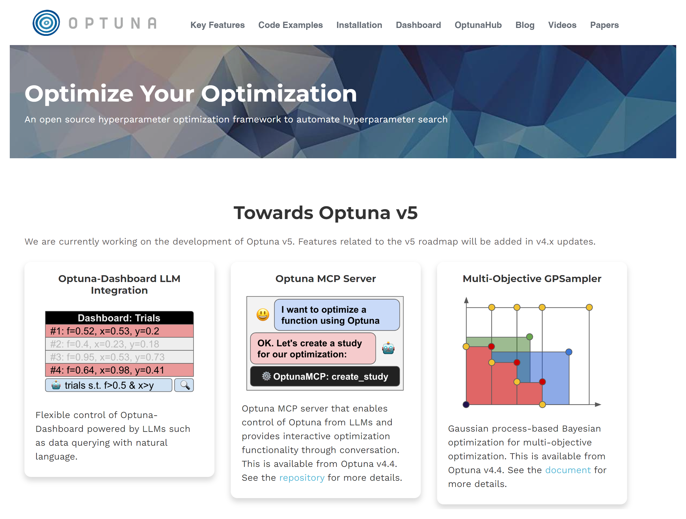
원본 화면(Optuna 공식 웹사이트)
| 화면 요소 | 내용 |
|---|---|
| 배너 | Optimize Your Optimization — 하이퍼파라미터 탐색을 자동화하는 오픈 소스 프레임워크 |
| 카드 3개 | Towards Optuna v5: 대시보드 LLM 연동, Optuna MCP Server, 다목적 GPSampler(가우스 과정 기반 베이즈 최적화) |
카드 내용은 시험과 거리가 멉니다 (추측). "Optuna = 베이즈 최적화로 하이퍼파라미터를 찾는 도구"가 핵심입니다.
Optuna로 25의 0–3단계 쓰기 (보충) — 교안에는 코드가 없음
train_and_evaluate는 직접 만드는 함수라고 가정했습니다(훈련 데이터로 학습하고 검증 데이터의 정확도를 돌려줌). 이 함수 자리에 가짜 점수 함수를 넣어 실제로 100번 돌려 보았고, 정해 둔 최적점(학습률 10−3, λ 10−6) 근처를 찾았습니다(Python 확인).
| 행 | 25의 단계 | 하는 일 |
|---|---|---|
| 4–5 | 0 · 1 | 범위를 정하고(로그 스케일) 후보 하나를 뽑음 |
| 6–7 | 2 | 그 값으로 학습하고 검증 성능을 돌려줌 |
| 9 | 목표 | direction="maximize": 검증 성능을 최대로(손실을 돌려주면 "minimize") |
| 10 | 3 | 100번 반복(37쪽 e.g., 100 trials). 앞 결과를 보고 다음 후보를 고름(베이즈 최적화) |
| 11 | 결과 | 가장 좋았던 하이퍼파라미터 |
용어: trial = 시도 한 번(뽑기 → 학습 → 평가), study = 시도 전체를 묶은 최적화 작업, objective = 목적 함수(점수를 돌려주는 함수).
마지막에 고른 하이퍼파라미터로 학습한 모델을 시험 데이터로 한 번 평가해 최종 성능으로 보고합니다(→ 24).
Part 5 정리 — 하이퍼파라미터 찾기
- 하이퍼파라미터 = 학습 전에 사람이 정하는 값: 너비·깊이, 학습률, 배치 크기, 규제 강도 λ, 드롭아웃 비율 p, 옵티마이저 옵션, 증강 강도. 매개변수(W, b)는 학습이 정함(36쪽).
- 하이퍼파라미터는 모델의 귀납적 편향과 용량을 조절. 잘못 고르면 과소적합·과적합, 불안정한 학습.
- 데이터 세 가지: 훈련 ⇒ 매개변수 학습, 검증 ⇒ 하이퍼파라미터 선택, 시험 ⇒ 마지막 최종 성능. 시험 데이터로 튜닝하면 안 됨 — 정보가 새어 시험 데이터에 과적합.
- 튜닝 과정(37쪽): 0 범위 정하기 → 1 후보 뽑기(무작위) → 2 학습·검증 평가 → 3 반복(예: 100번)하며 좋은 영역으로 범위 좁히기. 목표 = 검증 성능 최대.
- 격자 탐색 = 모든 조합, 무작위 탐색 = 무작위로 뽑음, 베이즈 최적화 = 앞 결과를 보고 다음 후보 선택(보충).
- Optuna = 베이즈 최적화 원리로 최적 하이퍼파라미터를 효율적으로 찾는 프레임워크(38쪽).
전체 정리 ① — 최적화 방법 (2–13쪽)
- 최적화 = 손실을 최소로 만드는 매개변수를 찾는 과정. SGD: W ← W − η∂L∂W, 현재 기울기만 씀(01).
- SGD의 한계: 비등방성 함수 f = 120x2 + y2에서 −기울기가 최솟값 (0, 0)을 가리키지 않아 지그재그. (−7, 2)에서 30번 갱신해도 (−0.35, 0.08)(η = 0.95, 책 설정)(02).
- Momentum: v ← αv − η∂L∂W, W ← W + v. 과거 기울기를 누적(속도 v). 같은 방향은 가속, 바뀌는 방향은 상쇄 → S자 경로, 끝점 (0.90, 0.09)(03–04).
- AdaGrad: h ← h + g ⊙ g, W ← W − η1√hg. 매개변수마다 학습률 조정, 누적이 크면 학습률 작게. h는 커지기만 하므로 학습률은 줄어들기만 함. 실용 팁 10−7. 끝점 (−0.12, 0.00)(05–06).
- RMSProp: h ← αh + (1 − α)g ⊙ g. 지수이동평균으로 오래된 기울기를 잊음(07). Adam = Momentum + RMSProp. m(기울기 평균), v(제곱 평균), 편향 보정 m̂, v̂. 보통 β1 = 0.9, β2 = 0.999. 끝점 (0.14, 0.32)(08).
- 계보도: 초록 = 학습률 수정(Adaptive), 빨강 = 기울기 수정(Momentum), 둘을 합친 Adam 계열. PyTorch torch.optim에 모두 있음(09). 모든 문제에 가장 좋은 방법은 없음 → 상황에 따라 선택(10).
전체 정리 ② — 가중치 초기값과 배치 정규화 (14–27쪽)
- 가중치를 모두 0(같은 값)으로 두면 뉴런의 출력·기울기·갱신이 모두 같아 대칭이 깨지지 않음 → 서로 다른 특징을 못 배움 → 무작위로 초기화(11).
- 시그모이드, 표준편차 1: 활성화가 0과 1에 몰림 → 미분이 0에 가까워 기울기 소실(12). 표준편차 0.01: 0.5에 몰림 → 기울기는 남지만 뉴런 출력이 거의 같아 표현력 제한(13).
- Xavier: N(0, 1n), 표준편차 1√n, n = 앞 층 노드 수. 선형 가정 → 시그모이드·tanh에 맞음. n = 100이면 0.1(14). He: N(0, 2n), 표준편차 √(2 ÷ n) ≈ 0.141(n = 100). ReLU가 음수를 0으로 만드니 2배 넓게(15).
- ReLU에서 표준편차 0.01은 층마다 0으로 줄어 학습이 안 됨(손실 2.3에서 수평), Xavier는 깊을수록 0 쪽 치우침, He는 고르게 유지되고 가장 빨리 학습(16).
- 내부 공변량 변화: 학습 중 각 층 입력의 분포가 계속 바뀌어 최적화가 느리고 불안정(17). 배치 정규화: 각 층의 입력을 미니배치의 평균·분산으로 정규화. 위치 Affine → Batch Norm → ReLU(18).
- μB, σB2(m으로 나눔), x̂ = x − μB√(σB2 + ε). (1, 3, 5, 7) → μ 4, σ2 5, x̂ = ±1.342, ±0.447(19). y = γx̂ + β, γ·β는 학습하는 매개변수(γ = 1, β = 0에서 시작). 효과: 학습률을 크게(빠른 학습), 초기값에 덜 민감, 규제 효과(20).
전체 정리 ③ — 과적합 대책과 하이퍼파라미터 (28–38쪽)
- 과적합 = 훈련 데이터에 지나치게 맞춰져 처음 보는 데이터에서 일반화하지 못하는 상태. 원인: 매개변수가 너무 많음, 훈련 데이터 부족. 30쪽: 훈련 약 1.0 vs 시험 약 0.73(21).
- 가중치 감소: Ltotal = Ldata + 12λ‖W‖22. 큰 가중치에 벌점, 기울기에 λW가 더해짐. λ를 키우면 가중치가 더 작아짐. 훈련–시험 차이 약 0.27 → 약 0.15(22).
- 드롭아웃: 훈련 때 뉴런을 무작위로 지움(출력 0). 공동 적응을 막음. 시험 때는 모두 쓰고 (1 − r)을 곱함(보충, 책). 33쪽 p = 남길 확률 0.5–0.9, 34쪽 0.15 = 지울 비율. 차이 약 0.23 → 약 0.19(23).
- 하이퍼파라미터 = 사람이 정하는 값(너비·깊이, 학습률, 배치 크기, λ, p, 옵티마이저 옵션, 증강 강도). 훈련 데이터 ⇒ 매개변수, 검증 데이터 ⇒ 하이퍼파라미터, 시험 데이터 ⇒ 최종 성능. 시험 데이터로 튜닝하면 안 됨(24).
- 튜닝: 0 범위 정하기 → 1 후보 무작위로 뽑기 → 2 학습·검증 평가 → 3 반복(예: 100번)하며 범위 좁히기. 격자 탐색 = 모든 조합, 무작위 탐색 = 무작위(보충)(25).
- Optuna = 베이즈 최적화 원리로 최적 하이퍼파라미터를 효율적으로 찾는 프레임워크. 앞 결과를 보고 다음 후보를 고름(보충)(26).
용어 정리 ① — 최적화
| 최적화optimization | 손실을 최소로 만드는 매개변수를 찾는 과정 |
| 옵티마이저optimizer | 매개변수 갱신 방법(SGD, Adam 등) |
| 확률적 경사 하강법SGD | W ← W − η × 기울기. 현재 기울기만 씀 |
| 비등방성anisotropic | 방향에 따라 기울기의 성질이 다름 → 지그재그 |
| 모멘텀Momentum | 과거 기울기를 누적한 속도로 갱신 |
| 속도velocity v | Momentum에서 누적된 이동량. α배씩 남음 |
| AdaGrad | 기울기 제곱 합 h로 매개변수마다 학습률을 줄임 |
| 학습률 감소learning rate decay | 학습이 진행될수록 학습률을 줄이는 것 |
| RMSProp | 기울기 제곱의 지수이동평균으로 학습률 조정 |
| 지수이동평균exponential moving average | 오래된 값의 영향이 지수적으로 줄어드는 평균 |
| Adam | Momentum + RMSProp. m, v와 편향 보정 |
| 편향 보정bias correction | 0에서 시작한 m, v가 초반에 작게 나오는 것을 1 − βt로 나눠 바로잡음 |
| 원소별 곱 ⊙element-wise product | 같은 자리 원소끼리 곱함 |
용어 정리 ② — 초기값과 배치 정규화
| 가중치 초기값weight initialization | 학습 시작 때 가중치를 정하는 방법 |
| 대칭성symmetry | 같은 값에서 시작한 뉴런들이 끝까지 같게 움직이는 것 |
| 활성화 분포activation distribution | 은닉층 출력값이 퍼진 모양(히스토그램) |
| 기울기 소실vanishing gradient | 역전파 중 기울기가 0에 가까워져 학습이 멈춤 |
| 표현력 제한 | 뉴런 출력이 거의 같아 여러 뉴런의 의미가 없어짐 |
| Xavier 초기값 | 표준편차 1√n. 시그모이드·tanh |
| He 초기값 | 표준편차 √(2 ÷ n). ReLU |
| 배치 정규화batch normalization | 각 층 입력을 미니배치 평균·분산으로 정규화 |
| 내부 공변량 변화internal covariate shift | 학습 중 각 층 입력 분포가 계속 바뀌는 것 |
| 정규화normalization | 평균 0, 분산 1이 되도록 바꿈 |
| 평균 μB · 분산 σB2 | 미니배치 값들의 평균과 분산(m으로 나눔) |
| ε | 0으로 나누기를 막는 아주 작은 상수 |
| 스케일 γ · 이동 βscale · shift | 정규화 뒤 y = γx̂ + β. 학습하는 매개변수 |
용어 정리 ③ — 과적합 대책과 하이퍼파라미터
| 과적합overfitting | 훈련 데이터에 지나치게 맞춰져 일반화하지 못함 |
| 일반화generalization | 처음 보는 데이터에서도 잘 예측하는 것 |
| 규제regularization | 과적합을 막으려고 모델에 제약을 거는 기법 |
| 가중치 감소weight decay | 큰 가중치에 벌점 → 가중치를 작게 유지 |
| L2 규제L2 regularization | 손실에 12λ × (가중치 제곱 합)을 더함 |
| 규제 강도 λ | 벌점 계수. 클수록 가중치가 작아짐 |
| 드롭아웃dropout | 훈련 때 뉴런을 무작위로 지우는 규제 |
| 공동 적응co-adaptation | 뉴런들이 서로에게 기대어서만 쓸모 있는 특징을 배우는 것 |
| 하이퍼파라미터hyperparameter | 학습 전에 사람이 정하는 값 |
| 검증 데이터validation data | 하이퍼파라미터를 고르는 데 쓰는 데이터 |
| 시험 데이터test data | 마지막 최종 성능 평가용. 튜닝에 쓰면 안 됨 |
| 격자 탐색grid search | 정해 둔 값들의 모든 조합을 시험 |
| 무작위 탐색random search | 범위에서 무작위로 뽑아 시험 |
| 베이즈 최적화Bayesian optimization | 앞 결과를 보고 다음 후보를 고름 |
| Optuna | 베이즈 최적화 기반 하이퍼파라미터 최적화 프레임워크 |
| 귀납적 편향 · 용량inductive bias · capacity | 모델에 미리 든 가정 · 나타낼 수 있는 복잡도 (보충 설명) |
확인 필요 ① — 질문할 것과 안내
이 교안에 대한 수업 필기와 교수님 말씀은 아직 없습니다. 중요도 구분은 모두 교안만 보고 정한 것(추측)입니다.
기말 정보: 계산 문제는 대체로 없을 예정, 단 역전파 계산은 예외(P3, 11.12 말씀). 그래서 이 교안의 갱신식(Momentum·AdaGrad·Adam 한 단계), 가중치 감소, 배치 정규화 계산은 모두 "(보충) 이해용 계산"으로만 넣었습니다.
교안 그림의 학습률·실험 조건이 대부분 빠져 있습니다. 이 자료의 값은 참고서(사이토 고키 『밑바닥부터 시작하는 딥러닝 1』) 설정으로 Python 재현해 그림과 맞춘 것입니다.
- 4·6·8·10쪽 경로 그림의 η·α: SGD 0.95, Momentum 0.1·0.9, AdaGrad 1.5, Adam 0.3 — 책 설정으로 재현(→ 02–08)
- 16·17·19·21쪽 실험 조건(입력 1000 × 100, 5층 × 100개, 표준편차 1 · 0.01) — 책 설정 가정, 재현 결과 일치(→ 12–16)
- 21쪽 손실 그래프·27쪽 정확도 그래프의 실험 조건 없음 — 시작 손실 2.3 = log 10이라 MNIST(10클래스)로 봄(→ 16, 20)
- 26쪽 배치 정규화가 왜 규제 효과를 내는지 설명 없음 — 미니배치마다 통계가 달라 생기는 잡음이라는 설명은 (보충, 추측)(→ 20)
- 15쪽 모두 0으로 초기화하면 출력층 가중치가 0이라 입력 쪽 가중치의 기울기는 같을 뿐 아니라 0(→ 11)
- 30·32·34쪽 실험 조건(책: 훈련 데이터 300개, 7층, λ = 0.1), 33쪽 시험 때 (1 − r) 곱하기(책 Dropout 계층)(→ 21–23)
확인 필요 ② — 교안 표기 주의: 1–13쪽
| 교안 | 원문 · 그림 | 읽는 법 · 근거 |
|---|---|---|
| 1·28쪽 | 목차 4번 · 28쪽 구분 쪽 제목 "Training Techniques" | 교안 전체 제목과 같지만 내용은 과적합 대책(→ 21–23) |
| 3쪽 | 제목 "Stochastic Gradient Descent" | 이 교안은 SGD를 갱신 규칙 이름으로 씀. P2 7쪽의 SGD(샘플 하나로 한 번 갱신, → P2 07)와 쓰임이 다름 |
| 4쪽 | 제목 "Limitations of Gradient Descent" | 본문은 SGD의 한계. 사소한 차이 |
| 5쪽 | 제목 "Momemtum" | Momentum의 오타 |
| 8쪽 | "To prevent the learning rate from becoming zero, … 10−7 is added to h" | 10−7은 h = 0일 때 0으로 나누기를 막는 값. h가 커져 학습률이 0에 가까워지는 것은 막지 못함. 책 코드는 h가 아니라 √h에 1e-7을 더함(→ 06) |
| 9쪽 | RMSProp의 α | 감쇠율. Momentum의 α(3쪽)와 다른 값(→ 07) |
| 10쪽 | Adam 마지막 식 "W = W − …" | 마지막 줄만 ← 대신 =(뜻은 대입). 분모의 작은 값 ε 없음. m, v, t의 정의가 적혀 있지 않음. Adam의 v(제곱 평균) ≠ Momentum의 v(속도)(→ 08) |
확인 필요 ③ — 교안 표기 주의: 14–27쪽
| 교안 | 원문 · 그림 | 읽는 법 · 근거 |
|---|---|---|
| 18 · 21쪽 | 18쪽 제목, 21쪽 둘째 줄 캡션 "Xaiver" | Xavier의 오타(본문에는 Xavier로 바르게 씀) |
| 18쪽 | Var(W) = 1n | Glorot·Bengio 원 논문은 앞·뒤 층을 함께 쓴 2nin + nout. 교안 식은 앞 층만 쓴 단순한 형태(→ 14) |
| 20쪽 | N(0, 2n) | 둘째 값은 분산. 표준편차는 √(2 ÷ n)(n = 100이면 0.141)(→ 15) |
| 21쪽 | ReLU 히스토그램 가로축 0–1 | 0인 출력(약 50%)의 막대가 7000 위로 잘려 있음. 1보다 큰 값은 그림 밖(→ 16) |
| 23쪽 | 출처 주소의 "covariant" | 용어는 internal covariate shift(→ 17) |
| 25쪽 | σB2 = 1m∑(xi − μB)2 | m − 1이 아니라 m으로 나눔(교안 그대로). (1, 3, 5, 7)이면 σ2 = 5(→ 19) |
| 26쪽 | Effects: Regularization effect | 규제 효과가 생기는 이유는 교안에 없음(→ 29 ①, 20) |
확인 필요 ④ — 교안 표기 주의: 28–38쪽
| 교안 | 원문 · 그림 | 읽는 법 · 근거 |
|---|---|---|
| 31쪽 | ‖W‖22 = ∑i Wi2 | W는 행렬이지만 첨자 i 하나로 모든 원소를 가리킨 것으로 읽음. 편향을 넣는지는 적혀 있지 않음(책: W에만)(→ 22) |
| 31·12쪽 | 가중치 감소 = L2 규제 | SGD에서는 같지만 Adam에서는 결과가 달라져 따로 AdamW가 있음(12쪽 PyTorch 화면의 AdamW 설명 "weight decay does not accumulate in the momentum nor variance")(보충) |
| 32쪽 | 가중치 감소 그래프 | 차이가 준 것은 주로 훈련 정확도가 내려간 덕분. 시험 정확도는 약 0.73 → 약 0.74로 거의 같음(그래프 읽기) |
| 33·34·36쪽 | keep probability p · dropout ratio 0.15 · dropout rate p | 같은 글자 p가 33쪽은 남길 확률, 36쪽은 지울 비율. 0.15(지울 비율)는 남길 확률 0.85라 33쪽 범위와 맞음(→ 23) |
| 33쪽 | 시험(추론) 때 처리 | 교안에 없음. 책: 모두 쓰고 출력 × (1 − r). PyTorch는 훈련 때 ÷ (1 − p)(→ 23) |
| 34쪽 | 드롭아웃 비교 그래프 | 300에폭의 시험 정확도는 드롭아웃 쪽이 더 낮음(약 0.68 < 약 0.77, 아직 오르는 중). 보여 주는 것은 격차 축소. 가로축 300에폭이라 30·32쪽(200)과 다른 실험 |
| 37쪽 | 1단계 "Randomly draw values … (Grid search or random search can be used.)" | 격자 탐색은 무작위로 뽑지 않음. "후보를 뽑는다(격자 또는 무작위)"로 읽음(→ 25) |
| 36쪽 | inductive bias, capacity, augmentation strength | 교안에 설명이 없음. 이 자료의 풀이는 (보충)(→ 24) |
예상 문제 안내
중간고사 형식(가장 적절한 것 · 옳지 않은 것 · 모두 고르시오 · OX · 단답 · 짝짓기)으로 14문항을 만들었습니다. 계산 문제는 대체로 없을 예정이므로 뜻과 방향을 묻습니다. 오답 보기는 반대말 바꾸기, 주어 바꾸기, 절대 표현으로 만들었습니다.
Part 1(Q1–Q5), Part 2(Q6–Q8), Part 3(Q9), Part 4(Q10–Q12), Part 5(Q13–Q14) 순서입니다.
수업 필기와 교수님 말씀을 받지 못해 교안만 보고 만든 예상이며 실제 출제와 다를 수 있습니다. 정답 칸을 눌러야 답이 보입니다. 보기 속 수치는 Python으로 검산했습니다.
- 학습률이 너무 작아서 갱신이 거의 일어나지 않기 때문이다.
- 방향에 따라 기울기의 성질이 달라(비등방성) −기울기가 최솟값을 똑바로 가리키지 않기 때문이다.
- SGD가 과거의 기울기를 누적해 관성이 생기기 때문이다.
- 기울기가 모든 방향에서 같기 때문이다.
(1) 현재 기울기뿐 아니라 과거의 기울기를 누적해 갱신한다.
(2) 매개변수마다 학습률을 따로 조정하는 방법이다.
(3) 같은 방향으로 계속되는 움직임은 가속되고, 방향이 번갈아 바뀌는 움직임은 상쇄된다.
(4) Momentum의 v와 Adam의 v는 같은 양이다.
- h에 기울기의 제곱을 원소별로 계속 더한다.
- 누적된 기울기가 큰 매개변수일수록 학습률이 작아진다.
- 학습이 진행되면서 학습률이 다시 커질 수 있다.
- 구현할 때 0으로 나누지 않도록 아주 작은 값(예: 10−7)을 더한다.
- RMSProp은 오래된 기울기를 점점 잊고 최근 기울기에 더 큰 비중을 두는 지수이동평균을 쓴다.
- Adam은 Momentum과 RMSProp을 합치려는 시도에서 나온 방법이다.
- Adam의 보통 설정은 β1 = 0.999, β2 = 0.9이다.
- Adam의 편향 보정은 m과 v가 0에서 시작해 초반 값이 작게 나오는 것을 바로잡는다.
(가) SGD (나) Momentum (다) AdaGrad (라) Adam
보기: ㄱ. 기울기 제곱의 합 h ㄴ. 아무것도 기억하지 않음(현재 기울기만)
ㄷ. 기울기의 지수이동평균 m과 기울기 제곱의 지수이동평균 v ㄹ. 과거 기울기를 누적한 속도 v
- 순전파 계산이 불가능해지기 때문이다.
- 같은 층의 뉴런들이 같은 출력을 내고 같은 기울기로 똑같이 갱신되어 서로 다른 특징을 배우지 못하기 때문이다.
- 가중치가 0이면 학습률이 자동으로 0이 되기 때문이다.
- 가중치가 같으면 과적합이 반드시 일어나기 때문이다.
(1) 가중치 표준편차가 1이면 활성화가 0과 1 근처에 몰려 기울기 소실이 생긴다.
(2) 가중치 표준편차가 0.01이면 활성화가 0과 1 근처에 몰린다.
(3) 활성화가 0.5 근처에 몰리면 기울기는 사라지지 않지만 뉴런들의 출력이 거의 같아 표현력이 제한된다.
(4) 활성화 분포를 보면 학습이 잘 되고 있는지 짐작할 수 있다.
- Xavier 초기값은 표준편차가 1√n인 정규분포를 쓴다.
- Xavier 초기값은 활성화 함수가 선형이라는 가정에서 나와 시그모이드·tanh에 알맞다.
- He 초기값은 ReLU에 알맞으며 분산이 2n이다.
- 앞 층의 노드 수가 많을수록 초기 가중치를 크게 잡는다.
- 각 층의 입력을 미니배치의 평균과 분산으로 정규화한다.
- 교안 그림에서 배치 정규화 계층은 Affine 계층과 ReLU 사이에 들어간다.
- γ와 β는 학습 중 최적값으로 조정되는 매개변수이며 γ = 1, β = 0에서 시작한다.
- 배치 정규화를 쓰면 가중치 초기값에 더 민감해지므로 학습률을 작게 해야 한다.
- 모델이 지나치게 복잡할 때(매개변수가 너무 많을 때)
- 훈련 데이터가 부족할 때
- 모델이 너무 단순할 때
- 훈련 데이터가 충분히 많을 때
- 가중치가 클수록 손실이 작아지도록 해서 큰 가중치를 유도한다.
- 기울기 ∂Ltotal∂W는 ∂Ldata∂W에 λW를 더한 것이다.
- λ를 0으로 두면 가중치가 모두 0이 된다.
- λ가 클수록 가중치가 더 커진다.
(1) 훈련 중에 뉴런(유닛)을 무작위로 지워 과적합을 줄인다.
(2) 시험(추론) 때에도 훈련 때처럼 뉴런을 무작위로 지운다.
(3) 유지 확률(keep probability) p = 0.9이면 뉴런의 90%를 지운다.
(4) 가중치 감소만으로 과적합을 막기 부족할 때 추가로 쓰는 규제다.
- 훈련 데이터(train set)로 모델의 매개변수를 학습한다.
- 검증 데이터(validation set)로 하이퍼파라미터를 고른다.
- 시험 데이터(test set)로 하이퍼파라미터를 고르면 가장 정확한 최종 성능을 얻는다.
- 시험 데이터는 치우침 없는 최종 성능 추정에 쓴다.
- 목표는 훈련 데이터에서의 성능을 최대로 하는 값을 찾는 것이다.
- 후보를 뽑아 학습한 뒤 검증 데이터로 평가하기를 여러 번 반복하며, 성능이 좋은 영역 주변으로 탐색 범위를 좁힌다.
- 탐색 범위는 처음부터 가장 좁게 잡고 점점 넓혀 간다.
- Optuna는 모든 조합을 빠짐없이 시험하는 격자 탐색 도구이다.
교안에 자주 나오는 단어 ① — 최적화·초기값·배치 정규화
| optimal adj. | 최적의 — find the optimal parameters |
| steepest descent | 가장 가파른 내리막 방향 |
| anisotropic adj. | 비등방성의(방향마다 다른) |
| zigzag | 지그재그 — a highly zigzagging path |
| accumulate v. | 누적하다, 쌓다 |
| adaptively adv. | 적응적으로(상황에 맞춰) |
| element-wise | 원소별로 |
| gradually adv. | 점차 — gradually forgets old gradients |
| exponentially adv. | 지수적으로 |
| identical adj. | 동일한 — identical outputs |
| saturated adj. | 포화된 — saturated regions(0·1 근처) |
| vanish v. | 사라지다 — vanishing gradients |
| collapse v. | 한곳으로 무너지다, 몰리다 — collapsed activations |
| variance n. | 분산 |
| statistics n. | 통계량(평균·분산) — statistics of a mini-batch |
| learnable adj. | 학습 가능한 — learnable scaling parameter |
교안에 자주 나오는 단어 ② — 과적합·하이퍼파라미터
| generalization n. | 일반화 |
| excessively adv. | 지나치게 — excessively tailored |
| tailored to | ~에 맞춰진 |
| insufficient adj. | 부족한 — insufficient training data |
| penalize v. | 벌점을 주다 — penalizes large weights |
| regularization n. | 규제 |
| combat v. | ~에 맞서다 — combats overfitting |
| discourage v. | 억제하다, 막다 |
| keep probability | 유지 확률(남길 확률) |
| capacity n. | 용량(모델이 나타낼 수 있는 복잡도) |
| leak v. | 새다, 누설하다 — leak information |
| unbiased estimate | 치우침 없는 추정 |
| search space | 탐색 범위 |
| sample v. | 뽑다 — sample hyperparameter candidates |
| narrow down | 좁히다 |
| leverage v. | 활용하다 — leverages Bayesian optimization |
필기 원문
아직 필기를 받지 못했습니다. 보내 주시면 교수님 말씀과 함께 반영합니다.
기말 정보로 반영한 것은 P3 수업(11.12)의 말씀 하나입니다: "역전파 계산 그래프는 아주 중요, 적어도 역전파는 계산할 줄 알아야 한다." 이 교안의 중요도 구분은 모두 교안만 보고 정한 것(추측)입니다.